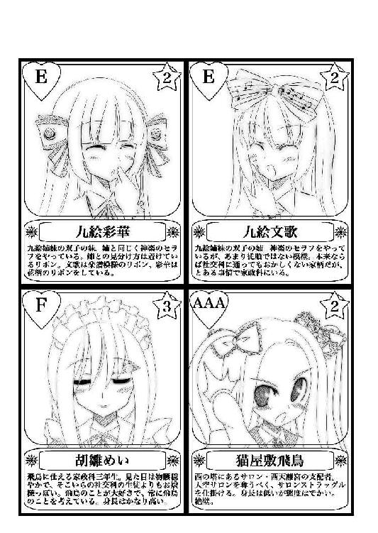
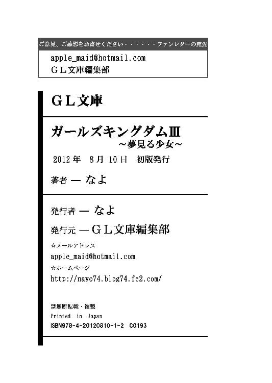

| ガールズキングダム3: 夢見る少女 (GL文庫) | |
| なよ | |
| GLnovels (2015) | |

いつの間にか桜の花も散り、四月も終わろうとしていた。
すっかり肌寒さも消え、穏やかに過ごせるこの季節――。
飛鳥様が挑んできたサロンストラッグルも、九絵姉妹の策略のおかげ？ でなんとか勝利を納め、天空サロンは今まで通り神楽様が支配を続けていた。
それまでと何も変わらず、天空サロンでは天上人のお嬢様たちが今日もお茶とお喋りに華を咲かせている。
一つ変わったことといえば、新しくメンバーが一人増えたことだ。
「きょ、今日からお世話になります、星野きららと申します。よ、よろしくお願いします」
珍しく緊張した面持ちで頭を下げるのは、わたしと同じクラスのきららちゃん。
神楽様に背水の陣でセラフにして欲しいとお願いし続け、ついにはサロンストラッグルでその資質を認められて、専属契約をしてもらえることになったのだ。
といっても、ちょっとばかり無茶をしてしまったので、周りへの影響なども考えて、残念ながらセラフではなくエクスシアでの契約となってしまったのだけど。
セラフに比べて、エクスシアは一段階下の契約になっている。
卒業後もメイドとして雇い続けると、ほぼ約束されているセラフとは違い、エクスシアは学院にいる間だけの専属契約だ。もちろんそのままメイドとして雇って頂ける可能性は多分にあり、実際にかなりの割合で、契約していたお嬢様のご家庭で続けて雇って頂いているらしい。
そのメイドのことが気に入っているけれど、雇ってあげられるかどうかの権限がお嬢様にない。その場合に、とりあえずエクスシアにしておいて、他の人たちに取られないようにしておくというのがこの契約だ。
もっとも、きららちゃんの場合は――。
「きららは皆さんも知っての通り、エクスシアからということですが、扱いはセラフと同じで構いませんわ。契約の変更は折を見て、ということで――」
神楽様が全員に確認の意味を込めて言い渡す。
と、まあセラフになることが確定しているようなものなので、あとは神楽様の判断一つということになっている。
きららちゃんも、一日でも早くセラフにしてもらえるように、全身全霊でお仕えすると意気込んでいた。
「それではメンバーの紹介を致しましょうか」
「ちゃんと覚えて粗相のないようにしなさい」
九絵姉妹が神楽様の後を引き継ぐような形で立ち上がって、きららちゃんの両脇に陣取る。
「はい、よろしくお願いします」
普段よりも、少しだけ九絵姉妹は真面目な顔をしていた。
私と違って、きららちゃんは直属の後輩ということになるから、先輩としてしっかりとしたところを見せたいと思っているのかもしれない。
意地悪やセクハラをしないで、いつもこれくらい真面目にしていてくれたら少しは尊敬できるのに......。
「神楽様と私たちは今更言わなくてもいいでしょう」
「まあ、何かわからないことがあれば聞きに来なさい。機嫌が良ければ教えてあげますわ」
「は、はいっ」
きららちゃんが上ずった声を上げてピンと背筋を伸ばした。といっても緊張の為ではなく、文歌さんがこっそりときららちゃんの背中を指でなぞったからだ。せっかく真面目にしていると思ったらもうこれだ......。
『くすくすくす』
その反応に満足したのか、姉妹揃って狐のように目を細めて小さく笑い始める。
神楽様にお仕えするというのはきららちゃんの望みどおりだからいいのだけど、九絵姉妹のおもちゃにされるのには同情してしまう。
ひとしきり笑った後、九絵姉妹は「改めて」と仕事を再開する。
こういう時、ここの住人はあまり......というか、まず注意をしたりしない。最初の頃は、天空サロンの支配者である神楽様のセラフのすることだから、と思っていたけど、どうやら九絵姉妹のすることを楽しんでいる節があるからだとわかってきた。
ちょっとした悪戯や、話が脱線しても、それを楽しむ余裕があるのだ。
さすが天上人と呼ばれる人たち、というところか。
ただ、神楽様自身がターゲットにされるとさすがにお怒りになるようだけど、それも本気で怒っているわけではなさそうだった。
私にはまだわからない信頼関係が、ここの人たちの中にあるのだろう。
「では時計回りに座っている順からいきましょうか」
「僭越ですが、私たちのほうからお名前と簡単な紹介をさせて頂きます」
「まずは天使姫子様」
「知っての通り、姫子様は天使女学院創設者の一族にして、現在は理事長代理をしていらっしゃいます」
「名家のご令嬢が集まる学院の中でも、一際特別な存在ということになりますわね」
「よろしくね、星野さん」
緊張しているきららちゃんを安心させるように、姫子さんは優しく微笑んだ。
「よ、よろしくお願いします」
「そして、その姫子様のセラフである蛍みさきさん」
「入学式当日に姫子様のセラフになるという快挙を達成した、期待の新人ですわね」
「同じ一年生として仲良くしなさい」
「ふえ？ あ、蛍みさきです。その、よろしくね」
不意にわたしのことまで紹介されて、間の抜けた声が出た。おまけに九絵姉妹に「さん」付けなんてされて、気が動転して自分で名乗る始末――。きららちゃんはクラスメイトでなお且つルームメイトでもあるんだから、そんなことする必要ないのに......。
案の定、きららちゃんは無言で「今更何を言ってるの、この子」と可哀想なものでも見る目をしていた。
『ぷっ』
これには九絵姉妹だけじゃなくて、他の人たちも小さく吹き出していた。
「くっ......」
恥ずかしいー。顔から火が出そうだ。
「そして、姫子様の隣に座っていらっしゃるのが社交科二年生の宮守菫様」
「お父様が国会議員をなさっておられますわ」
「宮守菫です。よろしくね」
菫様が微笑むと、ふわり、と暖かい風が吹いたような気がした。
菫様はとにかくお優しい方で、天空サロンの良心、春の妖精とまで言われている。
腰まである緩いカールのかけられた髪型が幻想的な雰囲気に磨きをかけていて、お傍にいると心地よくて眠気に誘われてしまいそうになる。
「菫様のセラフは家政科二年生の、鈴の音みはやさん」
「みはやさんは、とても歌がお上手なんですのよ。いずれ拝聴する機会もあるでしょうから、楽しみにしているといいわ」
「よろしくねっ」
みはや先輩は気さくな雰囲気と、儚げな雰囲気の二つを持つ少し不思議な感じのする方だ。それは、普段の明るい感じからは想像できないような、繊細で澄んだ歌声を持っているからだと思う。
菫さまの為に歌っているのを少し離れた場所でしか聴いたことはないけれど、みはやさんの歌声が聴こえると、お喋りしていてもそれを中断してつい耳を傾けてしまう。
それらは胸を締め付けられるような切ない歌であったり、心が温かくなるような歌であったりするのだけど、みはやさんの歌を聴いているとすぐにその曲と同じような心境になってしまう。魂に響く曲とでもいうのだろうか。一度聴いたら虜になってしまうこと請け合いだ。
そんな耽美的なお二人は学院内で癒しコンビとして有名で、二人が一緒にいるところを目撃できたら、その日一日幸せに過ごすことができ、さらにみはやさんの歌声を聴けたら願い事が叶う、なんてことがまことしやかに囁かれているくらいだ。
確かにお二人が一緒にいるところを見つけると、なんかいいものを見た、という気分になるのでそういう噂が流れるのもわからなくもない。
「次は社交科三年生の鳳条冴子様」
「鳳条銀行頭取のご息女でいらっしゃいますわ」
紹介されて冴子様が口の端を持ち上げて微笑んだ。それはまるで肉食動物が獲物を見つけて舌なめずりをしているかのようにも見える。
「お金に困ったら是非相談してちょうだい。親身になって相談に乗ってあげるわ」
極々普通に言っているだけなのに、背筋がぞくぞくとした。冴子様は、九絵姉妹とはまた別の意味でお近づきになりたくないタイプだ。わたしなんかが言うのは大変失礼になるのは分かっているけれど、冴子様は性格がかなりきついお方だ。九絵姉妹が悪戯好きなら、冴子様は虐げるのが好き――。冴子のＳはサディズムのＳと影で言われているくらいだ。自分のセラフにもまったく容赦がない。
触らぬ神に祟りなし。悪い人ではないとわかっているけれど、自分から虐められに行くような真似はしたくない。
「冴子様のセラフは草壁まつりさん」
「天空サロンにいるセラフのなかでは最上級生になりますわね」
「よ、よ、よろしくお願いします」
まつり先輩は三年生だというのに、きららちゃんに対して深々と頭を下げていた。
いつも何かに脅えているような、ちょっと気の弱い先輩だ。まあ、まつり先輩のお嬢様である冴子様の性格を考えると、そうなるのも仕方のないことかもしれない。ただ――、その――、これもわたしが言うのも失礼な話なのだけど、まつり先輩は冴子様に虐められるのをそれほど嫌がっているようには見えない、というか――受け入れているような――。
まつりのＭはマゾヒズムのＭ。そう冴子様同様、影で言われているくらいだ。ある意味理想的な主従関係になっているのだろうか......。
「最後は社交科二年生の鳴神稲穂様と――」
「稲穂様のセラフである尾瀬はるかさん」
「よろしくなの、３９７ちゃん」
「はっ？」
稲穂様の唐突な言葉に、きららちゃんは思わず眉を潜ませて聞き返した。
「お米じゃありません」
同様に何のことかわからず、目を丸くしているわたしの前で、はるか先輩が小さなハリセンで稲穂様の頭をスパーン！ とはたいた。そして、セラフにはたかれたというのに、満足そうな顔をする稲穂様。
「あのね、北海道にはきらら３９７という品種のお米があるの。それに掛けてみたの」
その場にいた誰もが小さくため息をついた。
「あー、稲穂様のお家は、全国で大規模な農牧場を経営していらっしゃいますわ」
「この学院にも食材を沢山卸して下さっていますわね」
九絵姉妹は眉間を押さえながら、説明を付け加えた。
稲穂様はどうやらお笑いが好きらしく、たまに一発ギャグの様な事をしたり、漫才のようなことをはるか先輩としたりして、みんなを楽しませている......ということにしておく。
本人は周りにウケているかどうかはあまり気にしていないみたいだけど、聞いている方は色々と気を使ってしまう。
「これで天空サロンの住人は全員ですわ」
「あなたもここの住人となったからには、それなりの心構えで天上人の名に恥じない立ち振る舞いをしなさい」
「わかりました」
一層緊張した面持ちで、きららちゃんは頷いた。
主人が違えば求められる物も違う。
わたしは姫子さんから厳しいことは何も言われないけれど、きららちゃんはかなり苦労しそうだ。
「それでは早速だけれど、お使いをお願いしようかしら」
神楽様が手を打ちあわせて、九絵姉妹に何か合図をしていた。
「稲穂さんから一番茶を頂いたので、他のサロンの方々におすそ分けを持っていって欲しいのですわ」
稲穂様の農牧場は手広くなんでもやっているらしく、お米や野菜はもちろんのこと、果物に畜産、今言ったお茶など、とにかく多岐に渡る。手を出していないのは、海産物くらいと言っていた。
『お持ちしましたわ』
九絵姉妹が和風の花模様で彩られた巾着袋を、幾つもの竹かごに入れて持ってきた。その中にお茶っ葉が入っているのだろう。
「これを西天離宮と、此花亭、サロン・ド・アンナ、後は中庭にいるアンジェリカ様のところと、報道部、それと......バレー部の美奈子さんのところへ持っていって頂戴。美奈子さんには言伝もお願い」
「わ、わかりました」
慌ててきららちゃんは今言われた場所を、生徒手帳のメモ欄に書き込んでいく。クラス名ならともかく、サロンの名前じゃどこにあるのかさっぱりだ。
わたしじゃなくて良かった、と胸を撫で下ろしていたら――。
「みさき、ついでだからあなたにもお使いをお願いしたいのだけど」
姫子さんがそんなことを言ってきた。
「わ、わたしにもですか？」
「ええ、星野さんと一緒に行ってらっしゃい」
まあ、お願いされたら行くしかない。その為のメイドであり、セラフなのだから。
「紫庭園にいる紫苑お姉様のところへ、同じようにお茶を持って行って欲しいの」
「お姉様って、姫子さんのお姉さんですか？ 実の？」
「ああ、違うのよ。血は繋がっていないわ。昔、よく一緒に遊んで頂いた方で、姉の様な存在だからそう呼んでいるの」
「へえ」
姫子さんの子供の頃か。それはもう可愛い子供だったんだろうなぁ。今度写真でも見せてもらおうかな。
「ええと、紫庭園の紫苑さま......と」
わたしも生徒手帳を広げてメモを取る。
「それで紫庭園というのは――」
「姫子ちゃん、姫子ちゃん、わたしもみさきちゃんにお願いをしていいかしら」
「私も使わせてもらってよいかしら」
わたしが場所の確認をしようとすると、さらに追加注文をする声が二つ。菫様と冴子様だった。
「ええ、構いませんわ」
二つ返事で了承する姫子さん。
「よかったぁ。みさきちゃん、申し訳ないのだけれどお願いねぇ」
「わかりました」
菫様に笑顔で言われると断れない。
「みさきさん、お願いね」
「わ、わかりました」
冴子様に笑顔で言われると、色々な意味で断れない！ 身の危険を回避するためには、素直に頷くしか選択肢が出てこない。顔は笑っていても、目の奥が鋭く輝いている。まるで猛禽類が獲物を狙っているかのよう......。
菫様からは二か所、冴子様からは三か所の追加依頼を受けて生徒手帳に書き込んでいく。
こうして見ると、サロンが思っていたよりも沢山あることがわかる。
言ってしまえばサロンの数だけ派閥があるわけで、お裾分けを持って行くということは、仲の良いところなのか、それとも揉め事を起こさない為の布石なのか......。そういえば西天離宮って飛鳥様のサロンだったような......。
サロンストラッグルであんなことがあったばかりだから、これ以上波風を立てないようにという神楽様の配慮なのかもしれない。
「ところできららちゃん、場所わかる？」
「半分くらいは......」
きららちゃんは少し難しそうな顔でメモに目を落としていた。情報通のきららちゃんでも、さすがにサロンの場所までは把握していないらしい。
「安心なさい」
わたしたちが小声で相談していると、神楽様が助け船を出してくれた。
「今回は案内をつけてあげますわ。その代わり、ちゃんと各サロンの場所と支配者を覚えていらっしゃい」
「はい」
「ありがとうございます」
「それではどなたにお願いしようかしら」
神楽様は座っている人たちを見廻した。
「はい、はーい。稲穂とはるかが案内してあげるの」
ぴょんぴょんと元気に椅子から立ち上がったのは稲穂様だ。はるか先輩の手首を掴んで両手を挙げて存在を主張する。
「あら、よろしいんですの？」
「お任せなの」
稲穂様はドンっと胸を叩いて、フフンと鼻を鳴らした。
「それでは申し訳ありませんけれどお願いしますわ。はるかさんもお願いしますね」
「かしこまりました」
はるか先輩は胸に手を当てて、少し膝を落として深々と頭を下げる。一つ一つの動作に隙がなく、高い身長と相まって非常に見栄えがする。さすがは上級生。そこにはプロ意識がよく見てとれる。わたしもあれくらい出来るようにならないとダメなんだろうなぁ......。
「それでは早速行くの。二人とも稲穂たちに続くの」
『はい』
先導する稲穂様の呼び掛けに、わたしときららちゃんの声が重なった。
「みさき、ちゃんとご挨拶してくるのよ」
「くれぐれも粗相のないように。それと、美奈子さんへの言伝を忘れずに」
竹かごを分けて持つわたしたちに、姫子さんと神楽様が念を押すように言ってきた。まるで子供が行う初めてのお使いのよう。......まあ、本当に初めてのお使いなのだけど。
「はい、大丈夫です。さすがにそこまで礼儀知らずじゃありませんよ。姫子さんの評判を落とすような真似をするつもりはありません」
「お任せ下さい。必ずやご期待に添える働きをしてみせます」
ちょっとしたお届け物をするだけだから、そこまで気合いを入れるものでもないし、そうそう失敗するようなものではないだろうけど、天空サロンを代表してのお仕事には違いない。きららちゃんにとっては、セラフに格上げしてもらうための一歩でもあるのだから、わたしも出来るだけ協力しないと。
「ふふ、そうね。みさきなら物おじすることもなさそうだし、心配していないわ」
わたしの頭に乗っかっているホワイトブリムの形を直しながら、姫子さんは微笑んだ。
「それでは行ってきます」
「ええ、行ってらっしゃい」
＊＊＊
「最初は飛鳥ちゃんのところへ行くの」
飛鳥ちゃん......。猫屋敷飛鳥様は二年生で、西天離宮の支配者だ。随分と天空サロンにご執着のようで、つい先日サロンストラッグルを仕掛けられて、あわや天空サロンを取られてしまう、というところまで追い詰められてしまった。神楽様や九絵姉妹に敵対意識をむき出しにしていたから、かなり仲が悪いのかと思っていたけど、稲穂様がちゃん付けで呼ぶあたりそうでもないのかな。
天空サロンからアンティークなエレベータで二階に下りたわたしたちは、廊下を西へ向かって歩いていた。同じ旧校舎の西にある塔の最上階が、飛鳥様の支配する西天離宮の場所だという。
天空サロンに比べて一階分ほど高さは低いが、それでも各あるサロンの中でも特別な場所にあたるらしい。同じように東の塔にもサロンを構えているお嬢様がいるらしいので、そちらも同じようにヒエラルキーの高い場所になっているのだろう。
「稲穂様は飛鳥様と仲がよろしいのですか？」
どうにもこの学院に来てから、言葉遣いが自然と丁寧になってしまっている。お嬢様とメイドという立場を認識してからはその傾向がより一層強まってきた。
メイドとしての身分に毒されているなあとは思うが、姫子さんにお仕えするようになってからは、それが自然なことだと思えるようになってきている。実際、社交科のお嬢様たちの寄付金で、わたしたち家政科の生徒は生活出来ているのだから、それくらいは当然なのかもしれない。
「飛鳥ちゃんは稲穂とクラスメイトなの」
「そうなんですか。お友達なんですね？」
「そうなの。あと、絵理栖ちゃんも同じクラスなの」
絵理栖ちゃん......絵理栖様......。確実に聞いたことのある名前だけど、誰だっけ。
「エコールキッチン・エリスのオーナーである絵理栖様ですね」
わたしが必死に思い出そうとしていると、後ろからきららちゃんがフォローしてくれた。
「ああ」
サロンストラッグルでマナー対決をしたときに、場所を使わせて頂いたお店のオーナーか。
高校生でしかも学院の敷地内にあるお店のオーナーって、そんなのありなの？ と思うけど、ここはもう下界とは別世界。わたしが持っている常識なんて通じないのだから、そういうこともあるんだ、と思うしかない。
「飛鳥様や絵理栖様とお友達なら、西天離宮に誘われたりしなかったんですか？」
「一年生の時は誘われたの。でも、その時はもうかぐちゃんのところに居たし、それにあそこは入会条件がとても厳しいの」
かぐちゃんって、神楽様か......。
「稲穂じゃ、もうどうやってもあそこには入れないの」
「はあ」
天空サロンに所属している稲穂様が入れないほど厳しい条件って思いつかないけど、どんなのだろう。
「着いたの」
稲穂様が真っ白に塗られた扉を指差した。
西天離宮へは天空サロンの様にエレベータは備え付けられていない。石造りのらせん階段を、二階分上った先が西天離宮の場所だった。
「ふああ、大きい扉ですねぇ」
わたしの背丈の倍近くありそう。
「まるで大きなホワイトチョコレートなの」
「そうですねえ」
扉の模様も板チョコのように見えなくもない。
「はるかは甘いものが大好きだから食べてもいいの」
「これだけ食べたらわたし自身がチョコレートになってしまいそうです」
「はるかがチョコレートになったらお茶の時間が捗りそうなの。甘いものが欲しくなったらはるかを舐めればオッケーなの」
稲穂様が涎を垂らしながらはるかさんを見上げる。
「悪くないですね。すると、こんな感じになるのでしょうか......。稲穂様、お茶をお持ちしました。お茶請けはこのはるかで......あっ、腰を折り曲げた瞬間、私真っ二つになって死にましたね」
「はるかっ、死んじゃダメなのぉ。そうなの、チョコレートならくっつければ復活するの」
「あ、稲穂様前後が逆です。それではわたしが『怪奇・上半身と下半身が逆向きの女』になってしまいます」
二人の脳内で、色々とシミュレーションが展開されていようだけど、チョコレートになった時点ですでに怪奇だからっ。そもそも、人はチョコレートになれないし、復活もしないっ。
「みさきちゃんが何か言いたそうなの」
わたしが脳内で突っ込みを入れていると、稲穂様が期待に満ちた目をこちらに向けてくる。
「なんでもありません」
ふいっと顔を背ける。
「チョコレートになったわたしを舐めたいと言いたいのでしょう。......どうぞ」
はるかさんが、こちらも期待に満ちた目をしながらわたしの口元に人さし指を当ててくる。
「舐めまーせんっ」
この二人のペースにはまるわけにはいかない。わたしは漫才師になりたいわけではないのだから。......いや、一発あてれば結構でかいのかも？
ほんの少しだけ危険な考えが脳裏を横切る。
ふと横を見れば、きららちゃんがどう反応していいのかわからず固まっていた。
うん、その反応はわかる。かつてはわたしもそうだったのだから......。
「そんなことより、はやく中へ入りましょう。たくさん周らないといけないんですから時間がなくなってしまいます」
「仕方ないの。それじゃあノックするの」
「はい」
ホッと胸を撫で下ろして、金色のドアノッカーを二回コンコンと叩いた。しかし、中からの返事は無い。
「......誰もいらっしゃらないのでしょうか」
「そんなはずはないの。今日も飛鳥ちゃんと絵理栖ちゃんは一緒にサロンへ行くと言っていたの」
「それなら居るはずですよね」
もう一度ノックしようとして、部屋の中から微かに声が聞こえてきたのに気がついた。
「ん？」
扉に耳を近づけると、確かに中から話し声が漏れてきていた。
『さあ...あす......おじょうさま......えん......ずに、めいの......に...............さい』
『そんなこと......るわけない......うが！』
この声はめいさんと飛鳥様？
あまり聞き取れないめいさんの声と違って、飛鳥様の声はどなり声に近い。
「何やってるのよ」
聞き耳を立てる姿をいぶかしんで、きららちゃんが怪訝そうに聞いてきた。
「いや、なんか中で言い争いみたいのをしているみたいで」
「言い争い？」
眉をひそめながら、きららちゃんも扉に耳を近づける。
『しかし、...いのミス.........なのですから責任......るのは......です』
『だ......って、そんなことする必要なないの！』
飛鳥様の声は次第に大きくなり、ついにはほとんど言っていることが聞こえるようになっていた。
「何をやっているのかしら」
きららちゃんは扉にへばりつきながら、さらに中の様子が聞こえないか耳を澄ましていた。
「ちょっと覗いてみるの」
「......そうですね。喧嘩だったら止めた方がいいですしね」
わたしときららちゃんは頷き合って、そっと取っ手に指をかけた。二人でゆっくりと扉を引いてわずかな隙間から中の様子を盗み見る。
そこで繰り広げられていた光景は――。
「............」
「............」
わたしときららちゃんは無言で扉を閉めた。
「どうしたの？ 中で何をやっていたの？」
「あー、あれはなんでしょうね」
「私、疲れているのかしら」
無垢な瞳で聞いてくる稲穂様に、明確な答えを返せなかった。
いやいや、実におかしな光景が見えたのだ。めいさんが四つん這いになり、その背中に金色の髪に大きな紫色のリボンをしたお嬢様が座ってお茶を飲んでいた。その傍では飛鳥様が怒りの為か、肩を震わせていたのだ。
「目の錯覚？」
「見間違いじゃないかしら......」
確認の為に、もう一度扉を少しだけ開いて覗き見る。
『だからあたしは気にしていないって言ってるでしょう、絵理栖も座ってるんじゃないわよ』
『私だって座りたくないけど、そうしないとめいがいつまでも止めないでしょう？』
『そうです。さあ、飛鳥様も罰を与えると思って、めいの背中にお座りください』
『座らないって言ってるでしょ！ 大体それだとめいには罰じゃなくてご褒美になっちゃうでしょうが！ そもそもあたしはセラフの背中に座るような趣味はないわよ！』
......なんだか意味不明な修羅場になっている。
見間違いでも錯覚でもなかったみたいだけど、一体何をやっているのだろうか。
そっと扉を閉めて息を吐く。
「どうする？」
「どうするって言われても......」
わたしときららちゃんは顔を見合わせて黙り込んだ。
中に入っていけるような状況ではない。しかし、放っておくのもどうかと思う。
「だから何があったの？」
「いや、その......」
稲穂様にどう説明したらいいものやら。
「何っ？ 何か用!? 今取り込んでるんだけど」
正直に言おうかどうしようか迷っていると、突然扉が開いて中から飛鳥様が顔を出してきた。どうやら気付かれていたようだ。
「あら、稲穂と尾瀬はるかじゃない。それに......あんたたち御影神楽のとこの一年生よね。何？ この前のことを笑いにでもきたの？」
「と、とんでもありません」
「今日は神楽様のお使いで伺わせていただきました」
眉を吊り上げて威嚇してくる飛鳥様に、わたしたちは慌てて手を振って否定する。
「お使いぃ？」
サロンストラッグルの一件があるだけに、飛鳥様は不信感を隠そうともしない。
「はい、稲穂様より頂いたお茶のお裾分けを持って行くように、神楽様に言われて参りました」
臆することなくきららちゃんが一歩前へ出る。
「そうなの、今年もいい出来なの。だから一年生の子に手伝ってもらって、みんなに配ってるの」
「ああ、そういうことね。いいわ、入りなさい」
飛鳥様は稲穂様の言葉に納得してくれたようだ。
「失礼します」
「失礼致します」
ホッと胸を撫で下ろして飛鳥様の後に続いて部屋の中へと入る。部屋の中では、やはりめいさんが背中に金髪のお嬢様を乗せて、四つん這いになっていた。
「ほら、めいも絵理栖もお客が来たのだからもう止めにしなさい。濡れた所はタオルで拭いておけばいいでしょう」
どうやら金髪のお嬢様が絵理栖様のようだ。紫色のリボンの他に、頭の上に巻き付けた三つ編みに薔薇の様な花飾りを二つ付けて、とても愛らしい姿をしていた。背丈は飛鳥様と同じくらいでまるでビスクドールのように美しい。
「......」
「うう、わかりました。仕方ありませんね」
絵理栖様が無言で立ち上がると、めいさんも渋々といった感じで立ち上がる。
「ええと、何があったんでしょうか」
わたしは思わず聞いてしまった。
「たいしたことじゃないわよ。めいがちょっと足を引っかけてソファーにお茶をこぼしてしまったから、椅子になって責任を取るって言って聞かなかったのよ」
「な、なるほど......」
「めいは普段はなんでも完璧にこなすけど、一度失敗すると必要以上に責任を感じるから困るわ」
それで自分が椅子に、ってそれはおかしいでしょう！
「うぐっ......」
喉まで出かかった言葉を必死に飲み込んだ。
「さすがめいちゃん。Ｍっ娘気質は相変わらずなの」
「お褒め頂いて光栄です」
「喜ぶんだ！」
......くっ、しまった。我慢できなかった。
「......みさきさんもこれが必要なようですね」
「いりません！」
嬉しそうにハリセンを差し出すはるか先輩の手をひらりとかわす。
「馬鹿やってないで、あんたらも座りなさい」
「あ、はい。失礼します」
飛鳥様が呆れたようにため息をついて、ソファーを指差す。濡れているところはめいさんがサッと拭いて、タオルの上にクッションを置いて座り、その横に絵理栖様が座ったので、他の空いているところにわたしたちは腰を下ろした。
一番上座に当たるであろうソファーは飛鳥様専用のようであり、一つだけ色が違っている。
少し離れた所には、ここの住人と思われる社交科のお嬢様が二人と、襟に金色の校章をつけた家政科の生徒二人が向かい合うようにして座っていた。目の前のガラステーブルには本が数冊積まれている。
わたしと目が合うと、小さく微笑んで会釈をしてくれたので、慌てて返す。社交科のお嬢様の方は、二人とも三年生のようだった。
「一応歓迎してあげるわ。ようこそ西天――」
「ようこそ、ちびっこサロンへ」
「え？」
突然、飛鳥様の声にかぶせるように、めいさんが声をあげた。
「......ようこそ、西天離――」
「ようこそ、ちびっこサロンへ！」
「............」
「............」
澄ました顔でめいさんはニコニコしているけど、飛鳥様のこめかみが引きつっている。
ええと......。
「めいぃ、その呼び方はするなって言ってるでしょう」
「こればかりは譲れません。誰が何と言おうとここはちびっこサロンです」
飛鳥様には絶対服従と思っていためいさんが、主人である飛鳥様に逆らっていた。サロンストラッグルの時は、あんなにも従順そうに見えためいさんがまるで別人のよう。
「ここはあたしのサロンなのよ！ そのあたしが西天離宮と名付けたのだから、西天離宮以外ありえないの！」
「確かに飛鳥お嬢様はそう名付けたかもしれません。しかし、めいにとってはちびっこサロン以外のなにものでもないのです」
「また始まったの」
二人のやりとりを、稲穂様は面白そうに眺めていた。
「またって、一体どういうことなんですか？」
「それは、めいの方から説明致しますわ」
わたしの問いに答えてくれたのは、めいさんだった。
「このサロンの中を見廻して何か気が付いたことはありませんか？」
「気が付いたこと......ですか？ うーん......」
首をめぐらせて、サロンの中を観察する。
「広さは天空サロンとあまり変わらないですよね」
ここも塔の最上階だから、それはどうしても同じくらいになってしまう。ただ、飛鳥様の趣味なのかどうかわからないけれど、ここは内装が非常にファンシーだ。部屋の中全体が薄い桃色になっていて、天井や壁には色とりどりの装飾品がちりばめられていた。なぜだか巨大な積み木のようなものが部屋の隅に置いてあって、大きさの感覚が狂いそうになる。実は今座っているソファーも、微妙に小さい気がする。
「メルヘンチックな感じがするのと、置いてある物のサイズがなんだか一般の物とは違うような......」
「ソファーもテーブルも一回り小さい感じがします」
やっぱりきららちゃんも同じように感じていたらしい。
「お二人ともよく見ていますね。他にはどうですか？ たとえば飛鳥お嬢様や、絵理栖お嬢様を見て感じることは？ ここにいらっしゃるお嬢様たちには、ある共通点があると思いますけど」
「共通点ですか......」
失礼とは思いつつ、飛鳥様と絵理栖様を見比べてみる。
「髪の色が似ているとかじゃないですよねぇ」
「違いますね」
ニッコリと微笑んでめいさんは否定する。
「先ほどの会話から推測すると、その......言いにくいことなんですが......」
どうやらきららちゃんは思い当たる節があるらしい。
「身長が......」
「その通りです」
きららちゃんが最後まで言う前に、めいさんが引き継いだ。
「ここにいらっしゃるお嬢様たちは、飛鳥お嬢様に一任されたこのめいが勧誘した方たちばかりなのです。その基準は身長１４５ｃｍ以下。その一点に尽きます」
身長１４５ｃｍ以下というのは、は高校生としては多分、かなり低い部類になるだろう。飛鳥様も絵理栖様も、確かにお人形のように可愛らしいけれど、それは身長の低さが一役買っていると思う。
「だから、ちびっこサロン......」
「めいが連れてきた人たちは確かにあたしのサロンにふさわしい人ばかりだったわ。だから気がつかなかったのよ。身長なんかで決めていたなんて！」
うがー！ と飛鳥様は叫んだ。
「ああ、ほんと皆さま愛らしい方ばかりですわ。小さなお嬢様たちに囲まれて、めいは幸せです」
「あはは......」
めいさんはうっとりと目を細める。......そういう趣味なのですね。完全無欠のイメージだっためいさんは、実は小さな女の子が好きでした、と。
「それじゃあ稲穂様が、このサロンにどうしても入れないというのは......」
「稲穂は身長１４６ｃｍなの」
「それだけ......ですか」
「ああ、本当に惜しいですわ。あと１ｃｍ低かったのなら、どんな手を使ってでも天空サロンから引き抜きをいたしましたのに」
本当にくやしそうに、めいさんは唇を噛んだ。
「もし身長が縮むことがありましたら是非お知らせください。かならずやお迎えにあがりますわ」
「稲穂はこれからもっと大きくなるから、それは無理なの」
稲穂様は笑顔だったけど、そこには確固たる意志が感じられた。意外と身長のこと気にしているんだ。
「もういいでしょう。ここはあたしの支配する西天離宮。百歩、いや千歩譲って、この部屋の中でだけ、その呼び方を許してあげる。その代わり外では絶対に言わないこと」
「わかりました。それでは改めて、ちびっこサロンへようこそ」
「ぐっ......」
一片の迷いもないめいさんの言葉に、飛鳥様は頬をひきつらせた。
「まあいいわ。それであんたたち、名前はなんて言ったっけ？」
「はい、わたしは蛍みさきといいます」
「私は星野きららです」
「そう、一応覚えておいてあげるわ」
『ありがとうございます』
わたしときららちゃんは同時に頭を下げた。
「それで、こちらがお持ちするように言われたお茶になります」
当初の目的を果たすべく、きららちゃんがお茶っ葉の入った竹かごを一つ、飛鳥様に差し出した。
「ありがたく頂戴するわ。稲穂のところのお茶は美味しいものね」
「今年もいい出来なの」
「貰いっぱなしもなんだから、少しゆっくりしていく？ お茶菓子くらい出してあげるわよ」
「せっかくだけど、今日は周るところがいっぱいなの」
「そう......。まあ仕方ないわね。今日はそちらのほうがメインなんだし。うちはまだ新しく人を入れるかどうかわからないけど、そのときはよろしく頼むわね」
「わかったの」
はて......なんだろう。ちょっと違和感というか、飛鳥様が訳知り顔というか。今日わたしたちが来ることを知らなかったのに、目的を知っている感じ？
「それじゃ次へ行くの」
その違和感の正体を確かめる暇もなく、稲穂様が立ち上がる。そうなるとわたしたちもそれに倣うしかない。まあしょうがないか。
「ああ、ちょっとだけいいかしら」
わたしたちが席を立ったところで、絵理栖様が手を挙げてわたしたちを呼び止めた。
「あなた、みさきといったわね」
「わたし......ですか？」
どうやらわたしに用があるらしい。
「ええ、あなた姫子嬢のセラフなのよね？」
「はい、そうですけど」
「そう、良かったわ。一度挨拶しておきたいと思っていたのよ」
「わたしにですか？」
「まあ姫子嬢込みのことなのだけど」
絵理栖様は小さく微笑んだ。うーん、この可愛さはめいさんじゃなくても虜になってしまいそう。
「あなたたち、よく私のところのお店を利用してくれているでしょう？」
「ああ」
エコールキッチン・エリスのことか。
「わたしは姫子さんに連れて行ってもらっているだけですけれど」
「そうね、でも利用してくれていることに変わりはないわ。姫子嬢にはいつも贔屓にしてもらって、とてもありがたいと思っているのよ。でも......」
絵理栖様の顔が少し曇った。
「最近はあまり姿を見ることがなくなったって、うちの子たちが言っていたのよ」
「そうなんですか？ わたし、姫子さんがどれくらいの頻度で通っていたのかよく知らなくて......」
姫子さんのセラフになってからは、週に一、二度はエコールキッチン・エリスに連れて行って貰っているけれど、それが多いのか少ないのかはわからなかった。他の日は、姫子さんたちの寮である、フランソワ館の一階にあるレストランを利用することが多い。フレンチだったり、イタリアンだったり、もちろん和食をとることもできるし、食事のバリエーションに困ることはない。セラフやエクスシアが食事を作ってさしあげるということもあるみたいだけど、今のところ姫子さんからその要望は出ていない。
「姫子嬢がセラフを作ったと聞いた時から予感はしていたのだけど、まあこればかりは仕方ないわ。魅力のない店に行きたいとは誰も思わないでしょうからね」
「そ、そんなことありませんよ。絵理栖様のお店の料理はとても美味しいと思いますよ」
「気を使わなくていいわ。あそこの料理は私のエクスシアである子たちが作っているのよ。プロが作った物に数段劣ることはわかっているわ。どのくらいのレベルかはちゃんと把握しているわ」
「わ、わたしにはあまり違いがわかりませんけど......」
「姫子嬢が足を運ぶ回数が減ったのがいい証拠よ。セラフが出来たことであの店に行く必要が無くなってきたのね。それに、あのお店が繁盛しているかどうかは、実際に利用しているあなたの方が分かっているでしょう？」
「......」
黙り込むしかなかった。エコールキッチン・エリスは、正直あまりお客さんが入っていない。理由はよくわからないけれど、絵理栖様の言う通りだ。でも、そのおかげでゆっくりと食事をとれるメリットはあると思う。......だからといって、そんなことを今言うのは失礼にあたるのは分かっている。
「ふふ、少し意地悪を言ってしまったわね。出来の悪い子ほど可愛いというでしょう？ つい過保護にしてしまうのよね」
絵理栖様は目を伏せて悪戯っぽく笑ってみせた。
「はあ......」
なんと返事していいかわからず、ため息の様な声が漏れる。
「呼び止めて悪かったわね。姫子嬢が選んだ子とお話が出来て良かったわ。よかったら、これたからもたまにでいいから利用してあげてちょうだい。うちの子たちも日々精進しているはずだから、いずれ他のお店に負けないくらいの料理を出せるようになるはずよ......多分」
「わ、わかりました。姫子さんに言っておきます」
「稲穂もお茶ありがとうね。後でお店の方で使う分も注文させていただくわ」
「わかったの」
「......ふう。緊張しました」
ちびっこサロン......もとい、西天離宮の外に出たところで、わたしは胸に溜まっていた息を吐いた。緊張の為か、少し額に汗をかいている。
たとえどんなに可愛いらしいお嬢様でも、やはりわたしたちのような庶民とは格が違う。
目に見えないオーラにあてられてしまっていたようだ。
「絵理栖ちゃんは、メイドの子がお店である一定の成果を残せたらセラフにすると言っていたけど、あまり成果があがっていなくて気を揉んでいるの」
「そうなんですか」
お店で働いているのはエクスシアの子だと言っていたし、セラフになるのも楽じゃないんだなぁ。
「稲穂様はエリスにはあまり来られないですよね？」
聞いていいものかどうか迷ったけど、あんなことを言われた後だと、繁盛していない理由が気になってしまう。稲穂様だけじゃなくて、天空サロンの他の人もあまり、というかまずエリスで見かけることはない。そこに何かありそうなんだけど......。
「稲穂は絵理栖ちゃんから、あまりお店に顔を出さないように言われているの。知り合いが同情して来られても、絵理栖ちゃんのお店で働いている子たちの為にならないからって」
「ああ、そうなんですか」
絵理栖様はなるべく甘やかさないようにしたいのだけど、やっぱり気になってしょうがないといったところなんだろうか。
「それよりも次へ行くの」
「はい」
＊＊＊
西天離宮を後にしたわたしたちは、一階まで降りるとそのまま中庭へと飛び出して、旧校舎と新校舎の間にあるガーデンテラスへと向かった。
そこは誰かが支配するサロンというわけではないけれど、アンジェリカ様率いる生徒会一派が、お昼休みや放課後に利用することが多い場所だ。
親しみやすい生徒会を目指して、なるべく生徒たちの目に自分たちの姿を晒し、生徒たちとの交流を深めようとしているらしいが、あまりうまくいっていないらしい。
家政科の生徒は言うまでもなく、社交科の生徒たちも遠巻きにしているだけで、なかなか近くに寄って来てくれないというのだ。
社交科の生徒たちの中にもヒエラルキーがあって、アンジェリカ様と対等に接することができるのは各サロンの支配者や名家のお嬢様くらいで、少し裕福な家庭の子女では恐れ多くて近づくことすら遠慮するのだとか。
今も、ガーデンテラスにある二十程のテーブルのうち、アンジェリカ様たちの座っているテーブルの周りは見事に誰も座っておらず、ぽっかりとドーナツの様な空間が出来てしまっていた。
「相変わらずアンジェちゃんの周りは面白いことになっているの」
稲穂様は迷いのない足取りで、アンジェリカ様の傍まで歩いていく。
「あら、稲穂さん、ごきげんよう。それにはるかさんと......みさきさんに、きららさんでしたね。ごきげんよう」
「ごきげんようなの」
『ごきげんよう』
稲穂様のあとに、わたしたちの声が重なった。
アンジェリカ様、わたしたちのこと覚えていたんだ。面識はあるといえばあるのだけど、家政科であるわたしたちの名前を覚えているとは思わなかった。
「まるで珍獣扱いなの」
「もっと気軽に話しかけてくれていいのだけどね......」
アンジェリカ様は苦笑いを浮かべた。
天空サロンで会った時は、周りがそうそうたる顔ぶれだったのでそこまで目立たなかったけど、アンジェリカ様の放つ存在感は圧倒的だ。近くにいると身ぶるいが抑えられず、まるで魂か何かを吸い取られてしまうかのような感覚に襲われる。持っている雰囲気が他の人とは全く違う。
――妖艶美姫。
その言葉が最もふさわしいと思う。ちょっと俗世離れした美貌の持ち主だ。
「こうして普通に接してきてくれる人は大抵他のサロンの住人になっていて、ここへ来てくれることなんて稀だし、一体何が悪いのかしらね」
憂鬱そうにアンジェリカ様は顔を曇らせた。
ご自身の有り余る存在感が一番の障害になっていることにまったく気が付いていないようだ。もっとも、それを教えて差し上げたところで、存在感を消すことなんてできないだろう。しかし、原因は何もアンジェリカ様一人だけのせいではないと思う。
アンジェリカ様と同じ席に、ティアラを正位置につけた優しげなお姫様のごときお嬢様と、テーブルの上に足を放り投げるという、大変はしたない行為をしている赤い髪をしたお嬢様が座っているのだ。
稲穂様の後を付いてきたからここにいられるけど、一人だったら絶対に近くに寄ったりしないだろう。
「アンジェがもっと笑顔を振りまけばいいのよ」
ティアラをつけたお嬢様が口をつけていたカップを置いて言った。
「お澄まし顔をしているのもいいけれど、それではアンジェの神秘性が上がるだけで親しみやすいものとは程遠いものになってしまうわ。ほら、笑顔、笑顔っ」
「こ、こうかしら？」
アンジェリカ様が言われた通りに口元を歪めて精一杯の笑顔をする。
「......何か企みごとでもしてそうですね」
表情を崩すことになれていないのか、その表情はニコッとしたものとは程遠く、ニヤッというちょっと悪者っぽい笑みになってしまっていた。
「ちょっとみさき！」
きららちゃんに袖をひっぱられて、自分がとても失礼なことを言ってしまったのに気がついた。
「はっ......すいませんっ！」
「みさきちゃんは意外と攻めるの」
「いいのです。私に顔の筋肉を全て使用するような笑顔は無理だとわかっていますから」
アンジェリカ様は諦めたようにため息をついた。
「いいんじゃないの？ 生徒会長なんてものは余裕たっぷりに冷笑しているくらいがいいのよ。変に愛嬌をふりまいて馬鹿だと思われるよりよっぽどいい。現状で何も問題なくやれているし、支持も集められているんだから。それに一般生徒の相手をしていたら公務に支障がでるかもしれない。こうして見世物扱いになっているくらいがちょうどいいんじゃないの？」
赤い髪のお嬢様が、ぼさぼさの髪を掻きあげながら冷たく言った。
「それはそうかもしれないけれど、やはりもう少し他の人とも触れ合いたいわ」
アンジェリカ様は顔を曇らせる。
「ま、邪魔はしないから好きにやったら？」
「そうね、私も他のたくさんの生徒と、お茶を飲んだりお喋りをしたりすることができたら楽しいと思っているわ」
「ありがとう」
二人のお嬢様にお礼を言うアンジェリカ様の表情はとても穏やかで優しいものだった。無意識なのか、身内にだけ見せる表情なのかわからないけど、その表情ができるのならアンジェリカ様の夢もいずれ叶うような気がする。
「ごめんなさいね、つい愚痴を言ってしまったわ。稲穂さんたちのご用件はなんだったかしら？」
「いつものお裾分けなの。今年の新茶もいい出来なの」
「ああ、どうやらそうみたいね」
なぜかアンジェリカ様は、わたしときららちゃんを交互に見比べていた。
「？ 失礼します」
少し値踏みされているような視線を受けながら、わたしはお茶の入った竹かごをアンジェリカ様の前に置いた。
「蛍みさきさん、星野きららさん、もう学院には慣れたかしら？」
アンジェリカ様が、竹かごの縁を人差し指で撫でながら聞いてくる。
「まあ、なんとか......ってとこです」
「おかげさまで楽しく学院生活を送らせて頂いています」
「そう、それは良かったわ。私も学院をより良くする為に頑張りますので、あなたたちの力が必要な時にはぜひ協力してくださいね」
『わかりました』
「それから、私たちはもっと社交科の子たちとも、家政科の子たちとも交流を深めたいと思っているの。ここへ来た時にはどうぞ気軽に声を掛けてちょうだいね。歓迎するわ」
『ぜ、善処します』
アンジェリカ様の申し出は、あまりにもハードルが高い。
「......はぁ」
わたしときららちゃんの息の合った返事に、アンジェリカ様は残念そうにため息をついたのだった。
＊＊＊
新校舎へと入り、報道部、サロン・ド・アンナ他、いくつものサロンを巡り、そしてまた校舎の外へと出て少し外れにある此花亭へ――。滞りなくお使いをしていて気がついたのは、意外な程わたしときららちゃんの名前が知られているという事実だった。
今までセラフを作らなかった姫子様の元へ彗星のごとく現れた蛍みさきと、自分からセラフにして欲しいとお願いし続けるという前代未聞の暴挙をしでかした星野きらら。さらにはいきなりサロンストラッグルなんてものにも駆り出され、あまつさえ報道部の手によって全校にその名を轟かせてしまったのだ。それだけ目立つことしていれば、もう知らない人の方が少ないと言っていい。顔は知られていなくても、名前を言うとみんな「ああ」と口を揃えて言うのだ。
「二人とも凄い知名度なの。家政科の子でそこまで知られている子はそうそういないの」
「そうでしょうね......」
それが喜んでいいことなのかどうなのか、かなり迷うところだ。まあ、学院の理事長代理なんてものをやっている姫子さんのセラフになった時点で、かなりわたしのことは広まっていたみたいだし、今更驚くようなことではないのかもしれない。
「それよりも次はどこへ行きましょうか」
「美奈ちゃんのところへ行くの」
「バレー部の美奈子様のところですね。ここで神楽様から言われている分は終わりだわ」
きららちゃんがメモを見ながら答えてくれる。
バレー部ということはグラウンド？ ......いや、グラウンドでバレーボールをやっているところは見たことがないから、体育館かな。
「今までサロンとか生徒会の人たちが使っているところばかりでしたけど、そこだけ個人を指名してるんですね」
きららちゃんが素直に思ったことを質問する。
「美奈ちゃんは、かぐちゃんのお気に入りの子なの」
「へえ、仲の良い方なんですか？」
わたしの言葉に、稲穂様は少し顔を曇らせた。
「仲は......ちょっと微妙なの」
当然、友人または親友くらいの間柄だと想像していたけど、どうやら違うらしい。
「喧嘩をしていたりするわけじゃないの。でも、義理人情が絡んでてうまくいかないの」
「ぎ、義理人情ですか？」
お嬢様学校に似つかわしくない言葉だ。
「美奈ちゃんも、かぐちゃんのことを好きだとは思うの、でもこればっかりは稲穂たちが口を出せることじゃないから見守っているしかないの」
「はあ......？」
そこは、天使女学院の中でも、一段と異彩を放っている場所だった。お茶と喋り、雅な宴に明けくれる乙女たちの園。それがみんなの持っている天使女学院のイメージだろう。
しかし、ここは別世界。汗と涙と努力と根性が支配する、まさに体育会系の園。
天使女学院にある体育館はハンドボール部、バスケットボール部、そしてバレーボール部が同時に練習できる広さがあり、本当にお嬢様学校なのかと疑いたくなるくらい熱気にあふれていた。
絶えず掛け声が響き渡り、各種ボールの跳ねる音や、コートの中を激しく動き回る選手たちの足音が胸の奥まで響いてくる。
「凄いですね。お嬢様学校の部活なんて、もっと緩いものだと思っていました」
残念ながら運動神経のあまりよろしくないわたしにも、彼女たちが真剣に、そしてレベルの高い練習をしているがわかった。
「ここの運動部はみんな強いの。設備と人材に惜しみなくお金を使っている成果なの」
「ああ......」
納得してしまった。
そりゃお金があれば最新の設備に、優秀なコーチを呼ぶことが出来るだろう。
「だから、より上を目指したいと思っている子は、自然とこの学院に集まってくるの」
言いながら稲穂様は、近くにいたマネージャーと思わしき生徒に、美奈子様を呼んでもらうように頼んでいた。
「ここにいる人たちは全員社交科の生徒なんですかね？」
みんな学院指定の体操着じゃなくて、各部専用のＴシャツやトレーニングウェアを着ているので、学科の違いはおろか、学年の違いすら部外者には判別できない。
「社交科の子が多いけど、家政科の子もいるの。実力があれば家柄も、生まれ育ちも関係無しなの。みさきちゃんもやってみるの？」
「いえいえ、わたし球技は苦手で......」
一つのボールをみんなで追い掛ける熱血青春も憧れるけど、何せそれに付いていけるだけの才能がないのはわかっている。せいぜい応援して騒ぐのが関の山だ。
わたしがブンブンと首を横に振っていると、マネージャーが話しかけていた美奈子様とおぼしき人がやってきた。
「おまたせ、アタシに何か用があるって？」
額から滲む汗をタオルで押さえながら現れたのは、めいさんに負けず劣らず背が高く、少しつり目の凛とした人だった。
スポーツ少女らしくスラリと伸びた手足は引き締まり、胸とお尻以外には無駄なお肉が見当たらない。長いオレンジ色の髪を赤いリボンを使って後ろで縛り、四本に分かれたポニーテールが風に微かに揺れていた。
カラっと晴れた夏の日の様な、さわやかな感じのする美人さんだ。
「美奈ちゃんオッスなの」
稲穂様がこの学院じゃめったに聞かないようなフランクな挨拶をする。
「あのねぇ、稲穂。体育会系だからって、そんな挨拶はしないって何度も言ってるでしょう」
「それじゃあメッスなの」
「オスもメスもない」
「あれもない、これもないと美奈ちゃんは言う。それじゃあ稲穂はどうすればいいの！」
「どうもこうも、普通に挨拶して」
「アーユーボーワン サパ サニーパ コホマダ」
「何語っ!?」
「ぶっ」
聞き慣れない発音に、思わず吹き出してしまった。
「シンハラ語はやめなさいっ」
はるかさんがおそらく的確なツッコミを入れるが――。
誰もそれが合っているかどうかすら判断つかずに、微妙な反応をするしかなかった。
「はあ、稲穂は相変わらずね」
美奈子様は疲れたようにため息を吐いた。どうやら色々と諦めたらしい。
「まあいいわ、それで用はなんだったかしら？」
「天空サロンのニューフェイスと一緒にお茶のお裾分けなの」
「ああ、そういえば神楽がセラフを増やしたらしいわね」
美奈子様がわたしときららちゃんの両方を見比べる。
「あの、正確にはまだセラフにはしてもらえてなくて、エクスシアなのですが」
おずおずと、きららちゃんが前に出て、手にしていた最後の竹かごを差し出した。それを受け取りながら、美奈子様はきららちゃんに視線を向ける。
「そう、あなたなのね。神楽のメイドなんて大変じゃない？」
「いえ、そんな。神楽様は優しい方ですから」
「でも、九絵姉妹の後輩になるってことなんでしょ？」
「う......」
そっちか......。
さしものきららちゃんも、これにはさすがに声が詰まった。
九絵姉妹は優秀なメイドであることは間違いないんだけど、悪戯やセクハラ好きなのが困りものだ。そのせいで危うくサロンストラッグルでは負けそうになってしまうし、お尻を触られたりするのも日常茶飯事だ。主人である神楽様に対する態度もちょっと不可解なところが多い。主人を主人と思わない態度というか、対等――もっと言うと、上から目線なところも多い。よく神楽様が本気で怒らないものだとハラハラしてしまう。まあ幼い頃からの付き合いみたいだし、わたしでは理解できない関係なんだろうけど......。
「あやか様たちは......後輩想いの先輩......ですよ」
きららちゃんは絞り出すように言った。
「ふふ、苦労はするだろうけど、神楽は悪いやつじゃないからね、頑張りなさい」
「はい」
稲穂様は神楽様と美奈子様の仲は微妙だと言っていたけど、美奈子様が神楽様を嫌っているようには感じられない。それどころか信頼している様子でもある。
義理人情が絡んでてうまくいかない、か。うーん、何があるんだろう。姫子さんなら知っているのかな。
「あ、それでですね。神楽様から言伝を預かっているのですが」
「何かしら」
きららちゃんがメモを開いて、最後のお使いを果たす。
「今度の練習試合も応援に行きますので、頑張ってください、とのことです」
「そう......。まったく、練習試合程度で来なくてもいいのに、暇なことね。まあいいわ、応援があった方が張り合いあるしね、歓迎すると言っておいて」
「わかりました」
美奈子様はちょっと困った顔を見せたものの、口元は笑っていた。
本当になんだか微妙な関係っぽい。
「それじゃ練習の邪魔をするとかぐちゃんに怒られるから行くの」
「あんたがそれを言うか。......まあいいわ、お茶ありがとうね。神楽にもよろしくね」
「わかったの」
呆れた顔をしつつも手を振って見送ってくれる美奈子様に礼をして、わたしたちはその場を後にした。
＊＊＊
「それで、貴女の名前はなんと言ったかしら？」
鋭い視線に射抜かれて、冷や汗がたらりと頬を伝った。
ここは新校舎から少し離れたところにある温室――紫庭園。
その名の通り、紫色の花々のみで彩られた紫の楽園。
その中にある一区画に、わたしは連れ込まれていた。
頭上からは淡い紫色をした藤の花が一面に垂れさがり、外からの視線を阻むようにカーテンの役割をしている。
テーブルを挟んだ目の前には、気だるそうにアームレストに肘をつき、右手を頬に当てながら、脚組みをしているお嬢様が一人――。
その人は、わたしが姫子さんから頼まれたお使いの最後の相手――月読紫苑様。
濃紫の髪は腰までありそうなほど長く、その頭には薔薇の花びらを散らしたような茨の冠が斜め４５度に飾られ、ダークメタリックの輝きを放っていた。
その姿はどことなく姫子さんと似ている気がする。
紫庭園を統べる紫苑様は、わたしたちが訪れると、わたしだけをこの場所へと連れてきたのだ。
稲穂様たちは紫庭園の他のメンバーに相手をさせて、なぜかわたしと二人きり――。
初対面の三年生、しかも社交科のお嬢様と二人きりなんて生きた心地がしない。
――いや、わたしだって別に社交科のお嬢様だからといってそこまで特別に感じることはないのだけど、紫苑様の纏っている雰囲気は冴子様に良く似ていた。
冴子様が鷹のような猛禽類だとすると、紫苑様は豹のような肉食獣。完全に捕食者の立場にいる方だと一目でわかる。
気だるい態度とは裏腹に、その瞳には鋭い光が宿り、獲物の動向を見逃さないように爛々と輝いていた。
その鋭い眼光に射抜かれると、いやでも体が縮こまる。
「もう一度聞くわ。名前は何だったかしら？」
ごくり、と喉が鳴った。これ以上応えないでいると、鋭い爪で引っかかれてしまいそう。それとも牙で噛みつかれるのか......。
「......蛍みさきです」
渇いた喉で、それだけを絞り出した。
「そう、みさきというのね」
紫苑様はニッコリと微笑んだ。
その笑顔を見て、背中の産毛がぞわぞわと逆立つのを感じた。
名前なんて名乗らなくても、多分紫苑様はわたしのことを知っていたと思う。最初から獲物を捉えたような目つきをしていたのだから。
だから、これはただの確認作業。
「フフン。貴女、姫子のセラフになると以前から約束していたという話だけど、あれ嘘でしょう」
「え？」
ビクっと体が跳ねた。
バレ......てる？
「隠さなくてもいいわ。ここへ来たということは、私のことを姫子から少しは聞いているのではなくて？」
「......昔からのお知り合いで、姉の様な存在だと」
「あら、嬉しい。ここ一年ほど避けられていたけど、まだそのように思ってくれていたのね」
紫苑様は手を叩いて喜んでいたけど、目はあまり笑っていない。
「そう、私は姫子のことを昔から知っている。あの子が好きなものも、嫌いなものも。交友関係も把握している。それこそ、お尻にあるホクロの場所だって知っているわ」
「そ、それくらいわたしだって知っています......」
つい口を挟んでしまったが、自然と声が小さくなっていってしまう。
「何か言ったかしら？」
「い、いえ......」
「だから、貴女の様な子がいきなり出てきたことにちょっと驚いているのよねぇ。でも、それはいいのよ。姫子がセラフを作ったということは、私にとっては朗報だから」
「......」
「それで、姫子はようやくやる気になってくれたのかしら？」
「え？ な、なんのことでしょう」
その受け答えが非常にマズイものだったとすぐに気がついたけど、もう後の祭り。
一瞬にして、紫苑様の機嫌が悪くなってしまった。
空気が一変する。紫苑様から完全に笑顔が消えた。
息苦しくなるほどの威圧感が紫苑様から放たれて、容赦なくわたしを包み込む。
「セラフを作ったということは、やる気になったからではないの？ それならば、なぜお前は姫子に選ばれたのかしら？」
ひええええ。
目が――目が怖い！
とてもじゃないけど、視線を合わせられない。
これで、ただのスケープゴートです、なんて答えたら無事にここから帰れそうにない。
「わ、わたしはまだセラフになって日も浅いですし、込み入ったことは把握していなくて――紫苑様のおっしゃられている『やる気』というものを姫子さんが持っているかどうかお答えすることができません」
「フン、それは仕方ないわね」
ちっとも仕方ないと思っていない口調だ......。
「で、事情を知らないのに、セラフに選ばれた理由は？」
うう......。なんて答えよう......。正直に言うわけにはいかないし......。
「じ、事情を知らないのに、セラフに選ばれるのはおかしいですか？」
「質問をしているのは私よ」
ひーっ！
そんなに睨まれたって答えられないものは答えられないんです。
「他の者ならいざしらず、姫子がセラフを作るということは特別な意味を持っているのよ」
そ、そんなこと言われたって、姫子さんが今までセラフを作らずにいた理由を教えてくれないのだから、わたしが知るわけがないじゃないですか。と、言いたいけれど――。
「わ、わたしが選ばれた理由は――」
「理由は？」
「――企業秘密なのでお答えすることができません！」
本当のことは言えない。嘘も言えない。だったらこう言うしかないじゃないか。
ぎゅっと目を閉じて、紫苑様の言葉を待った。
長い沈黙が落ちる――。
紫苑様がその間何を考えていたかはわからない。
――しばらくして、小さなため息が聞こえた。
「フフン、まあいいわ。言いたくないのなら今回は許してあげるわ」
「！」
や、やった。
「でもね、納得したわけじゃないわよ」
「う......」
そりゃそうだ。
「姫子の意図はわからない。けれど、セラフを作ったということは、心境になんらかの変化があったということでしょう。私のところへ貴女を寄こしてきたというのもその一端。だから、もう少し様子見をすることにしただけ。姫子に言っておきなさい。私はあまり気の長い方ではないと」
「わかりました......」
どうも、姫子さんと紫苑様の間には、約束事の様なものがある感じ？
それを行うのが姫子さんで、紫苑様は姫子さんが何かをやるのを待っているのだろうか。
「それから、貴女のこともちゃんと覚えたから」
「はい？」
「姫子のセラフになったからには一蓮托生だということをしっかりと胸に刻み込んで、姫子に仕えなさい。姫子は私の可愛い妹の様なものだから、姫子を悲しませるようなことをしたりしたら......わかっているわよね？」
ひいぃ！
満面の笑みが怖い！ わたしのことなんて忘れて結構ですから！
姫子さんのセラフになったのって、大失敗だったんじゃ......。
「フフン。あおい、お客様がお帰りよ。手土産を持たせてあげなさい」
「はい」
「わっ」
それまで誰もいなかったはずなのに、突然わたしの後ろで声がした。
振り返れば紫の薔薇の花束を持ったメイド姿の女性が一人。
きっと紫苑様のセラフなのだろう。金色の校章が襟につけられていた。
「どうぞ」
「あ、どうも」
驚きながらも、差し出された薔薇の花束を受け取る。
濃い紫の薔薇――。その色の通り、濃く芳しい香りが鼻孔をくすぐる。
すごい、こんな綺麗な薔薇があったんだ。
「イントゥリークの花言葉は、誇り、気品、王座――。はたして、今の姫子に似合うかしらね」
意味ありげに微笑んで、紫苑様は席を立つ。
去りゆく後ろ姿を見ながら、花束を持つ手の平にじっとりと汗が滲んでいるのに気がついた。
「こ、怖かったぁ......」
膝から崩れ落ちそうになるのをなんとか堪えながら、わたしは稲穂様たちの元へと辿りつき、天空サロンへの帰路へとついたのだった。
＊＊＊
「取って喰われるかと思いました」
天空サロンへ帰りつくなり、わたしは姫子さんに泣きついた。
「取って喰われるかと思いました！」
「わ、わかったから繰り返さなくていいわよ」
わたしの勢いに、姫子さんがめずらしくたじろいだ。
「はあ、もう生きた心地しなかったですよ。途中で紫苑様、物凄く機嫌悪くなったし、おまけにわたしのこと覚えたって――わたし、明日から無事に学院生活を送れるでしょうか......」
「あら、ちゃんと覚えてもらえたのね。それは良かったわね」
「全然良くないですよ！」
思い出しただけでも冷や汗が出てくる。紫苑様が獰猛な笑みを浮かべながら――それはもうわたしの中ではサーベルタイガーのごとく牙を剥いているイメージで、今にも襲いかかってきそうになっているのだ。
あんなのに狙いをつけられたら、逃げることなんて無理無理。
だけど、わたしのそんな気持ちを知ってか知らずか、姫子さんは涼しい顔をしている。
「いいのよ、今回はそれが目的だったのだから」
「ええ？」
「みさきは、お披露目会って聞いたことあるかしら？」
「えーと、前にクラスメイトの子が、お披露目会がどうのこうのと言っていた気はしますけど、詳しくは......」
「サロンに新しく入った子はね、他のサロンの人たちや知人に名前と顔を覚えてもらえるようにお披露目会をするのよ。私たち天空サロンでは社交科の生徒だった場合はホールを貸し切ってパーティをするのだけど、家政科の生徒だった場合は自分たちの方から出向いて挨拶をさせるようにしているの。だから、今日みさきたちが行った場所の人たちはそのことを知っている方達だから、名前と顔を覚えて貰って正解なのよ」
「そ、そうなんですか？」
がくっと、体から力が抜けた。
どうりで訳知り顔な人たちが多かったわけだ。
「もう、それならそうと言っておいてくださいよ」
「ふふ、ごめんなさいね。緊張感を持ってもらうために、内緒にしておくのが決まりだから」
姫子さんは口元に手を当てて、ころころと笑った。
「それで、紫苑お姉さまは何か言っていたかしら」
「ええと、姫子さんにやる気が出てきたのかって聞いてきましたけど、わからないって答えたら怒っているようでした」
「......それは仕方ないわね。私が悪いのだから」
姫子さんは少しうつむいて、顔を曇らせてしまった。
「......」
「何のことか聞かないの？」
「聞きたいですよ。でも、今はまだ聞いちゃいけない気がするんです。今のわたしは好奇心で聞きたいと思っているだけで、それを聞いたからといって何ができるかもわかりませんから」
「そう......」
「でも......もしわたしが、好奇心だけじゃなくて、色々と気持ちが決まった上で聞きたいと言ったら、教えてくれますか？」
「そうね。私の我儘に付き合ってくれているのだから、みさきには聞く権利があるわよね。紫苑お姉様が言っていたことも、私がセラフを作らないと言っていた理由も、全部話すわ」
「わかりました。でも、しばらくは聞く気はありませんけどね」
「あら、どうして？」
「だって、面倒事に巻き込まれそうじゃないですか。半端な気持ちじゃ聞けませんよ」
「ふふ、そうね。少なくとも秘密を漏らさないようにしてもらわないといけなくなるわね」
姫子さんの曇っていた顔が少し晴れて、笑顔が戻って来ていた。
「ああ、そうだ。これどうしましょうか」
紫苑様から頂いた薔薇の花束を掲げてみせる。
「頂くわ。相変わらず見事な色合いね」
わたしの手から花束を受けとって、姫子さんは鼻を近づけた。
「いい匂いだこと。そうね、テーブルに飾っておきましょう」
言いながら、くるっと体を回転させていつもの席へと歩いていく。
その後ろ姿は、普段通りの姫子さんだった。
「みさきもいらっしゃい。お茶とお菓子を用意してあるのよ。お菓子はもちろんみさきが好きなドーナツよ。一緒に食べながら今日のことをもっと教えてちょうだい」
「はーい、もう大変だったんですよ。ちびっこサ......西天離宮でめいさんが......」
姫子さんのあとをついて行きながら、わたしは各地のサロンなどであった出来事を話し始めたのだった。
慌ただしく過ぎ去った四月――。
勉学に勤しむ普通の高校生活を送るつもりだったわたしの考えは、その一歩目から大きく崩されることになった。
まさか学費無料、生活費無料につられて受験した天使女学院が、メイド養成学校だったなんて。
正確にはもともとお嬢様学校で、そのお嬢様たちに仕えるメイドを一緒に育成してしまおうと、後から新設されたのが家政科――すなわち、わたしが受験した学科だったのだけど。ちなみに、お嬢様たちが通うのは社交科である。
甘い話には罠がある――。いやいや、わたし以外の家政科の生徒はみんなそれを承知していたんだから罠ではない。しかし、わたしには物凄く衝撃的な事実だった。
だからといって今更辞めるわけにもいかず、わたしは普通の勉強とメイドの勉強という二つを両立することになってしまった。
当初の予定が崩されてしまったものの、悪いことばかりではない。学費と生活費が無料なのは変わらないし、なにより少ないながらもメイドとしてお嬢様に仕えた分はお給金として支払われるのだ。二足のわらじはきついものの、「それならちょっと頑張ってみようかな」という気になるものだ。
もっとも、そういう気になったのは、あるお嬢様に出会ったからというのが大きい。もうすでに社交科の生徒をお嬢様と呼ぶのに抵抗がなくなっているあたり、だいぶ馴染んできていると思うけど、わたしが最初に出会ったお嬢様――天使姫子さんはわたしにとって最高のお嬢様だった。
天使の性からもわかる通り、姫子さんは天使女学院創設者の一族である。
社交科に通う生徒でありながら、天使女学院の理事長代理という肩書きを持ち、なおかつ学院内で最高位に位置する天空サロンの住人という、本来ならばわたしなんかが口を利けるような立場の人ではない。
しかし、なんの運命の悪戯か――。入学式の日に出会ったわたしたちは、お互いの事情と目的がうまいこと合致して、金の契約という専属契約を結ぶことになったのだ。
人間、慣れとは怖いものである。姫子さんの専属メイド――セラフとして生活するのに抵抗があったのは一週間くらいのもの。
当初の目的を忘れたわけではないが、今ではすっかり姫子さんのメイドが板についてきている。
姫子さんと出会ってセラフになって、きららちゃんと友達になって、サロンストラッグルなんてものにも駆り出されて、他にも色々な人たちと出会った。
そんな忙しい日々を送っていたら、あっという間に一カ月が過ぎ去ってしまった。
そして、五月の始まり――。
ようやく学院にも慣れてきた今日この頃。あと二日もすればゴールデンウィークということで、クラスの話題は連休のことで持ちきりだった。
「きららちゃんは帰省するの？」
朝のホームルームが始まるまでのわずかな時間。同じ天空サロンの住人となったおかげで、ようやくきららちゃんと気軽にお話が出来るようになっていた。テーブルマナーの練習をしていた時くらいから、だいぶ自然に話せるようにはなっていたけど、もう嫉妬される理由もないし気楽なものだ。
「夏季休暇ならともかく、四日しか休みがないから帰らないわよ。それに、一日でも早く神楽様のセラフになれるようにしないといけないもの、遊んでいる暇もないわ」
「そっかあ。でも、どうやったらセラフにしてもらえるんだろうね」
「何か実績を作れるといいのでしょうけど、サロンストラッグルみたいなことが何度もあるわけじゃないし、地道にメイドとしての仕事を頑張るしかないわね」
きららちゃんは顎に手を当てながら「はあ」っと、ため息を吐いた。
「みさきはどうするのよ」
「わたしも帰らないよ。帰るお金もないし」
「お給金は......もう少し後だものね。でも、電車代？ くらいもないの？」
「ないんだな、これが。うちの財政状況は厳しいのよ」
「まあ、家政科にいる子は色々あるわよね」
メイドはもはや一般的な職業になっているので一概には言えないが、やはり経済的に厳しい家庭の子がなっていることが多い。各諸費用が無料になっている天使女学院なら尚のこと。どうせお仕えするならセレブ階級のお嬢様がいいという理由でここに来る子も多いけど、それと同じくらい経済的な理由で来ている子も多いのだ。
わたしが帰省しない理由は他にもあるのだけど、気を使ってくれたのか、きららちゃんはそれ以上何も言ってこなかった。
姫子さんはどうするんだろう。帰省するのかな。でも、姫子さんにも色々ありそうだしなぁ。そういえば姫子さんから家のことって聞いたことがないかも。まあわたしも家のことは話したことがないけど。
「みなさん、おはようございます」
そんなことを考えている間に担任の先生がやってきて、ホームルームの時間になってしまった。
我がクラスの担任の日依先生は、いつも笑顔を絶やさない優しい先生だ。生徒からは、「ひよちゃん」なんて呼ばれていたりする。見るからにいいところのお嬢様で、立ち振る舞いや身につけている装飾品に育ちの良さが現れていた。聞けば天使女学院の社交科の卒業生だそうで、色々と納得である。年もまだ二十代前半らしく、先生というよりはお姉さんのように慕っている生徒も多い。
「今日のホームルームは、とても大事な連絡があります」
のんびりとした話し方なので緊張感にやや欠けるが、珍しく日依先生は真面目な顔をしていた。
「みなさんそろそろ学院にも慣れてきた頃だと思いますが、ゴールデンウィークが明けたら、いよいよ実務に移ってもらうことになります」
わあっと、クラスがざわめき始めた。
「そう、みなさんお待ちかねですね。社交科の生徒と仮契約を行い、お部屋係として実際にお世話を出来るようになります」
家政科の生徒は当然だけど、社交科のお嬢様のご家庭で働けるようになるのが目標だ。
しかし、ただ勉強をしているだけでは、そうそう専属契約を結んで貰えるような出会いがあるわけもない。お嬢様たちにしても、この学院で育てられたメイドが他のところからきたメイドよりも優秀であることがわかっていても、すぐに雇えるかというとそうではない。仕事の内容に不満がなくても、なんとなく気が合わなかったり、その逆で、仕事内容よりも安心して傍に置いておけるメイドの方が良いというお嬢様もいる。
そこで少しでも出会いの場を増やし、それぞれに合ったお嬢様やメイドを見つけられるようにするのが仮契約である。
専属契約を交わしていない生徒を、一カ月交代でお部屋係として社交科の生徒の元へ遣わせるのだ。
そこで気に入ってもらえたら、セラフやエクスシアとして契約してもらうというわけだ。
家政科の生徒にとってはいよいよ自分を売り出すことができるわけで、盛り上がるのも頷ける。
わたしはすでに姫子さんと専属契約を交わしているので関係ないからいいけど、それがなかったらちょっと大変だったかも。
なにせ、別にメイドを目指しているわけではないのだ。それなのに一カ月に一度のペースでお世話をするお嬢様が交代することになったら、毎回それぞれのお嬢様にあったお世話の仕方を身につけなければならないし、相性が悪かったらそれだけで気疲れして勉強にも身が入らなくなってしまうだろう。
もし適当な仕事をしてお嬢様の機嫌を損ねたら成績にも響いてくるだろうし、最悪退学、なんてことにもなりかねない。
それを考えると、姫子さんのセラフになって本当に良かったと思う。わたしの都合を聞いてくれるし、勉強も見てくれる。まさに理想のお嬢様だ。
「誰がどの生徒の元へ行くかは、あとで希望調査票を書いてもらい、それを参考にしながら決めることになっています。自分がどういったメイドを目指しているのか、今のうちに考えておいて下さい」
どうやら、一応ある程度の希望は聞いてもらえるらしい。確かにレディースメイドが欲しいお嬢様のところへ、キッチンメイドが行っても意味はない。それが運命の出会いになる可能性はあるけど、大抵は時間の無駄になってしまうだろう。学院側も色々と考えてくれているようだ。
「それでは希望調査票を配る前に、メイド長を決めたいと思います」
メイド長？
「メイド長はみなさんも知っての通り、メイドのまとめ役です。みなさんがお部屋係として働いている間に、様々な問題や悩みが出てくると思います。先生には話せないようなデリケートなことがあるかもしれません。そういった時に、相談に乗ってくれたりサポートをしてくれたりするのがメイド長です。生徒と先生の橋渡し的な役割をしてもらいながら、業務を円滑に進められるように様々な事案に対応してもらいます」
はー、なんだか大変そうな役職だ。わたしなんかじゃ絶対に務まりそうにない。
「メイド長の任期は決まっていません。というのも、メイド長はセラフやエクスシアといった専属契約を交わしていない生徒から選ぶからです。つまり、メイド長に任命された人が専属契約を交わしたら、そこで交代となるわけです。だからといって、何もないまま丸一年やってもらうということは考えていません。長くても半年ほどで交代させたいと考えています。まあ、メイド長に選ばれるような生徒はすぐに専属契約を持ちかけられて、三か月も続かないのがほとんどですけどね」
にっこりと日依先生は微笑む。
ということは、わたしときららちゃんはメイド長候補からすでに外れているというわけだ。よかった、よかった。ほっと安心して胸を撫で下ろした。
「メイド長に関しては、先生の方から指名させてもらうという形になります。先ほど言った専属契約を交わしていない人の中で、現在の成績上位者にお願いしようと思っています。もし、指名された人で、どうしても受けることができないというのであれば、理由を教えてください。メイド長は時に大変激務になることもあります。無理に押し付けようとは思いません。では......」
日依先生がクラスの中を見廻す。
そして、ある一人の生徒のところで視線が止まった。
「最初のメイド長は、サラさん。あなたにお願いしたいと考えていますがいかがでしょう」
「ハイ」
返事をしながらサラちゃんが立ち上がった。
「その申し出、お受けいたしマス」
迷うことなくサラちゃんは即答した。
黄色みがかったブロンドヘアー、鼻筋の通った端正な顔立ち、透き通るようなブルーアイズ。語尾がわずかにカタコトになるサラちゃんは、家政科の生徒には珍しく、イギリスから来た留学生だった。
少し広がり気味な後ろ髪、編み込んだお下げを耳の横から左右に垂らし、桜の花びらをした小さなリボンで髪を留めている。
目つきが少しきつく、ちょっと近寄りがたい雰囲気があるので、実はまだ喋ったことがないけど、これまでの授業では常に優秀な成績を残しているのを知っている。
「サラさんはまだ日本の風習や、天使女学院独自のシステムに不慣れな部分があるでしょう。メイド長をやることで日本のことや、学院のことをより深く知ってもらえるようにという期待を込めて今回は選ばせてもらいました。みなさんは遠慮なく、サラさんに困ったことがあったら相談してください。またそれと同時に、サラさんがわからないことがあったら、みなさんで教えてあげてください。いいですね」
日依先生がクラス中を見廻すと、『はーい』というクラス全員の声が重なった。
その返事の中には、自分が選ばれなくて良かった、という安堵の声が幾分含まれているようだ。
正直、わたしも『長』という名のつく役職は、できれば遠慮したいと思っている。
「さて、ここで一つ先生からお願いがあります。みさきさん、きららさん」
「は、はい」
突然指名されて、体がぴくんと跳ねた。きららちゃんも、ほぼ反射的に顔を跳ねあげていた。
「みさきさんと、きららさんは、今の時期では珍しく、すでに専属契約を交わしています。しかも、あの天使姫子さんと、御影神楽さん」
クラスの視線が、一気にわたしたちに集まってくる。姫子さんのセラフになってからというもの、こういった注目を浴びるのは珍しくなくなってしまったとはいえ、いまだに慣れるものではない。
「これはもう大変に素晴らしいことです。そこでですね、お二人の仕事の内容をサラさんに見せてあげて欲しいのです。セラフやエクスシアとなった生徒がどのようなことをしているのか、またサロンがどういったところなのかを実際に見せて教えてあげてくれないでしょうか。メイド長を務めるにあたって、その辺りのことは知っておいた方が仕事もしやすいと思うのです」
「ええと......」
わたしなんてセラフといったって、そんな大したことをしているわけじゃないし、姫子さんにくっついてそれっぽいことをしているだけだから、「仕事の内容」なんて言われても困ってしまう。まあ事情を知らない人から見たら、誰もがうらやむ姫子さんのセラフに選ばれた凄い一年生的なものなんだろうけど。当然のように、姫子さんを満足させられるような仕事が出来ている、と思われていても仕方ない。
「どうする？」
わたしはきららちゃんに小声で尋ねた。
わたしはともかく、きららちゃんならエクスシアの名に恥じない仕事が出来ているだろうから、わたしの分までサラちゃんに見てもらうということが可能だと思う。
それに、サロンに連れて行くなら神楽様の許可がいるだろう。
「構わないんじゃないかしら。でも、そうね......」
答えるきららちゃんは少し誇らしげだ。
神楽様のエクスシアになってから、自信の様なものが出てきた気がする。
「私たちの一存では決められませんから、後ほど神楽様にお伺いしてみます」
「そうですね。良い返事が貰えることを期待しています」
きららちゃんが立ち上がって言うと、日依先生は小さく頷く。それは、模範的な対応をしてみせたきららちゃんに満足しているようでもあった。
「聞いての通りです。サラさんはお二人からの返事待ちということになりますが、神楽さんなら多分許可を頂けるでしょう。勉強だと思って二人から色々学んでください」
「わかりまシタ。みさきサン、きららサン、ヨロシクお願いしマス」
サラちゃんが、礼儀作法の教科書に載っていてもおかしくないほど綺麗な角度でお辞儀をしてくる。
「わっ、はい、こちらこそよろしくお願いします」
「よろしくね」
澄んだブルーの瞳に見つめられて緊張するわたしと違って、きららちゃんは微笑む余裕すら見せていた。
「はい、それでは希望調査票を配りますので、みなさん自分がどういったメイドを目指しているのか、考えながら書いてください」
すでにセラフになっているので特に書くことのない希望調査票を受け取りながら、改めて、「ここはメイドを育成するところなんだなあ」と実感するのだった。
＊＊＊
「星野さん、神楽様ってどんなお嬢様なの？ とても厳しい方だと言われているけど本当？」
「もうお披露目会をされたんですって？ 他のお嬢様たちにもたくさんお会いできたの？ いいなあ」
「神楽様はもっとメイドが欲しいって言ってない？ 私にもチャンスはないかしら」
一通りの授業が終わって放課後になると、わたしの周りにはクラスメイトが集まってくることが多い。おもに、姫子さんのことや天空サロンのこと。他にも天上人と呼ばれるお嬢様たちのことを聞かせて欲しいとせがまれるのだ。
素敵なお嬢様との出会いを待ち焦がれる彼女たちは、少しでもお嬢様たちの情報を得ようと必死だ。
いつもならわたしに集中砲火が集まるのだけど、先日きららちゃんが神楽様のエクスシアになってからは、きららちゃんにターゲットが移り始めていた。
きららちゃんの性格からして、そんなことには応じないかと思いきや、神楽様のことを話したくて仕方ないのか、案外律義に答えてあげていることが多い。
それも、みんながお部屋係になり、専属契約を結ぶ生徒が増えてくれば自然となくなると思うので、わたしも答えられる範囲で答えるようにしていた。
今日も数名のクラスメイトに囲まれたわたしたちだったけど、ふいに話の途中できららちゃんが「あっ」と声をあげて立ち上がった。
目の前で両手を合わせて「ごめんなさい」と謝る。
「今日はサラさんを天空サロンへ連れて行ってあげないといけないから、ここまでで」
わたしときららちゃんは、昼食の時に神楽様に今朝の出来事を話して、首尾よく許可を得ることが出来ていた。
それぞれのサロンは、基本的に閉鎖された世界だ。サロンの支配者が認めた者、招待した者以外は足を踏み入れることを禁止しているところが多い。先のお披露目会だって、稲穂様が一緒じゃなかったら門前払いをされていたことだろう。サロンに所属している人なら、ある程度自由に行き来出来るらしいので、顔を覚えてもらうのはとても重要なことらしかった。
そんなわけで、今回は「そういう理由なら」ということで、特別に許してもらえたのだ。
九絵姉妹からは、
「興味本位で来たいと言っている生徒を連れてこないように」
「もし連れてきたら、しばらくは罰として裸エプロンをしてもらうわよ」
なんて釘を刺されてしまった。
「みさき、行きましょう」
「うん。ええと、サラちゃんはどこにいるのかな」
クラスの中を見廻すが、席には座っていない。
「こちらデス」
聞き憶えのあるカタコトの日本語。声のした方を振り向けば、既に準備を整えたサラちゃんが廊下に一歩出たところで待っていた。
慌ててわたしたちも、鞄を持ってサラちゃんのところへ向かう。
「待たせちゃってごめんね」
「声を掛けてくれてよかったのに」
「今日のワタシは見るのが仕事ですカラ」
サラちゃんは言葉通り、じっとわたしたちを見つめてくる。
「そんなに見つめられるとちょっと恥ずかしいかな」
「馬鹿言ってないで早く行きましょう」
「ハイ」
天空サロンの場所、そこへ通じるエレベータの使い方なんかを話しながら、わたしたちは天空サロンのある旧校舎へと向かったのだった。
＊＊＊
天空サロンへ着くと、すでに姫子さんや神楽様が先へ来ていた。
「サラさんをお連れしました」
「ようこそ、天空サロンへ。わたくしが当サロンの支配者、御影神楽ですわ」
サロンへ入ると、まずはきららちゃんが神楽様にサラちゃんを紹介する。
「この度は、天空サロンへの入室を許して頂き、ありがとうございマス。天空サロンは、トップランキングのサロンと聞いていマス。その支配者の神楽様にお会いできたことはとても光栄デス」
「いいのよ、そんなにかしこまらなくても。リラックスして、今日はお茶でも飲んでいきなさい。見学といっても天空サロンはそれほど広くないから、座ったままでも事足りるでしょう。何か聞きたいことがあれば答えて差し上げますわ」
「イエ、お気づかいなく。ワタシは立ったままで大丈夫デス。ワタシのことはいないものと考えてくださって構いまセン」
「いいから、今日はあなたはお客様よ。たとえ家政科の生徒でも、客人を立たせたままにしておくことなんてできませんわ」
「......ワカリマシタ。ありがとうございマス。お言葉に甘えさせていただきマス」
サラちゃんは、二度は断らなかった。
サラちゃんの態度は堂々としたものだ。臆したところもなく、落ち着いて丁寧に受け答えをしている。淑女然としていて、レディースメイドとして傍にいたら、さぞかし見栄えのすることだろう。
サラちゃんは神楽様に促されるままに、席のところまで行くと、そこに居た天空サロンのメンバーに挨拶をしてから椅子に腰を下ろした。
今日はみんなお気に入りのスペースではなくて、中央のテーブルに集まっている。わたしたちがサラちゃんを連れてくるというので、歓迎しようとしてくれているらしい。
テーブルの上にはお菓子が並べられ、お茶の用意もほとんど済んでいた。
サラちゃんが席に座ると、ささやかな宴が始まる。
わたしときららちゃんはエプロンを身につけて、ちょっとサラちゃんにいいところを見せようと、給士の役を任せてもうことにした。最近になって、ようやくまともにお茶を淹れられるようになってきたので腕の見せ所だ。きららちゃんは初めからメイドを目指していただけあって、そこらの基本的なことは誰に教わるまでもなく出来ていたので負けられない。
とはいえ、天空サロンでの生活はこちらに一日の長がある。みんなの好みまではさすがにきららちゃんも把握していない。
先輩としてきららちゃんに色々と教えてあげながら、わたしたちは給士に飛びまわった。
サラちゃんはと言えば、神楽様たちと笑顔で歓談をしている。その様子は家政科の制服を着ていなかったら、普通にお嬢様同士でお茶会をしているようにしか見えなかった。
社交科には留学生が何人かいるみたいだけど、サラちゃんみたいな育ちの良さそうな子が家政科でメイドをやっているなんて、ちょっと謎だ。花嫁修業の一環と言うわけでもないだろうし......。今日のことをきっかけに、きっと仲良くなれるだろうから今度聞いてみようかな。
「みさき、あなたもそろそろ座ってお茶にしなさい。お菓子がなくなってしまうわよ」
「はーい」
みんなもお茶のお代わりはもう要らなさそうだし、わたしもお言葉に甘えて休憩させてもらうことにする。個人的に今日の仕事っぷりは、なかなか良かったんじゃないかと思う。
足を引っかけてお茶をこぼすこともなかったし、それぞれのお嬢様にあった好みを間違えることもなかった。きららちゃんも天空サロンへ来て二日目にしては、失敗をすることもなく立派に給仕を務めあげていた。
これならサラちゃんにも「さすがデス」、なんて言ってもらえるかもしれない。
「はい、みさき」
姫子さんがクッキーをつまんで、わたしの口元へ運んでくる。他の人から「は餌付け」、なんて言われているけど、姫子さんはわたしに直接お菓子を食べさせるのが好きらしい。
最初に天空サロンでドーナツをこうやって食べさせてから、えらく気に入ってしまったようだ。「恥ずかしいんですけど」、といっても止めてくれないので、もう諦めて素直に食べさせてもらっている。さすがに寮の自室や天空サロン以外ではやってこないので問題ない。
「サラさんはイギリスの方なのね」
「そうなんですよ」
「さすがにメイドとしての知識は豊富ね」
「そうなんですか？」
何が「さすが」なのかわからず聞き返す。
「イギリスはメイドの本場ですもの。ヴィクトリア朝時代に職業として確立されてから、ずっと洗練され続けてきているのよ。サラさんは随分と勉強しているみたいだし、きっといいメイドになるわね」
「はー、本場のメイドかあ」
どうりで成績優秀なわけだ。
「そうだわ、みさき。今日はまた泊まりにいらっしゃい」
「んー、わかりました」
姫子さんは頻繁にわたしを部屋に招いてくる。それは、休日や夜間にお世話をしていると、お給金にそれ相応の手当てがつくからだ。経済的に厳しいわたしに気を使ってくれているのと、姫子さんと交わした約束――姫子さんのお世話をするかわりに、勉強を見てもらう、というのを実行するためでもある。
初めのうちは、毎日のように行っていたら邪魔じゃないのかなあと思っていたけど、姫子さんは意に介していない様子で、むしろ共同生活的なものが出来ることを喜んでいるらしかった。だからわたしも最近では素直に好意を受け取ることにして、三日に一度くらいは姫子さんの部屋で寝泊まりする生活になってしまっていた。
リーンゴーン、リーンゴーンと、最終下校時刻を告げる鐘がなる。
下校といっても、天使女学院は全寮制だから、鐘が鳴っても慌てる生徒は少ない。見回りの先生がやってくるのも暫く後のことである。校舎に残って何かしらをしている生徒が、区切りをつけてそろそろ自室へ戻る準備をしましょうか、と考える程度の物だ。
社交科のお嬢様たちが申請すれば、その後も深夜近くまで残ることも可能だ。
なんでも夜会を開くお嬢様たちもいるのだとか。
天空サロンでも、鐘が鳴ってからゆっくりと片付けをすることが多い。
「きららとみさきは、サラさんを送ってあげなさい」
『わかりました』
神楽様に言われて、わたしときららちゃんは一足先に帰る準備に取り掛かる。
今日はかなり真面目に仕事をしたつもりだけど、サラちゃんはどう見てくれただろうか。
いくらメイドの本場からやってきたとはいえ、サラちゃんだってまだ誰とも契約していないのだし、メイドとしては、わたしたちのほうが実務経験が多いのだ。
色々と役に立ててくれればいいのだけど、なんてちょっと先輩ぶってみたりして......。
「それではまた後ほどお部屋に行きますね」
「ええ、待っているわ」
見送ってくれる姫子さんにひと時の別れの挨拶をして、わたしたちは天空サロンを後にした。
そして、サラちゃんとの帰り道――。
「今日はどうだった？ 少しは参考になったかな」
その時のわたしが、ちょっとばかり天狗になっていたのは否定できない。自分では合格点をつけられる出来だったと思う。
しかし、サラちゃんの口から出た言葉は、冷や水を浴びせるようなものだった。
「タイヘンがっかりしまシタ。日本のメイドはかなりレベルが低いようデス」
「え？」
思わず目が点になる。
「イエ、あそこにいたメイド全てがとはいいまセン。しかし、少なくとも一年生であるみさきさんときららさんは、到底メイドとして満足のできるレベルではありませんでシタ」
「ちょっと、それどういう意味よ」
きららちゃんが眉を吊り上げながらサラちゃんに詰め寄った。
「そのままの意味デス」
「な、何か悪いところでもあった？」
立ち止まり、サラちゃんと向き合う。サラちゃんの背後には旧校舎が悠然と構えている。
つい先ほどまで、その一番見晴らしの良い場所で、完璧とはいえないかもしれないけど、それなりの仕事が出来ていたはずだ。
「悪いところだらけデス」
「うう......、給士の仕方に問題が？」
先ほどまでの自信はどこへやら。しどろもどろになりながら、サラちゃんに子犬の様な視線を向ける。
「それ以前の問題デス。あれではきららさんがセラフにしてもらえないのも当然デス」
「なんですって！」
きららちゃんが今にも噛みつきそうな勢いでサラちゃんの眼前に迫る。
「待って」
わたしは慌ててきららちゃんを背後から抱きしめて、サラちゃんから引き離した。
「きららちゃんは、最近になってエクスシアになったんだよ。色々事情があってすぐにはセラフにしてもらえないの」
「知っていマス。きららさんのやらかしたことは有名ですカラ。しかし、そんなことは関係ありまセン。本当にきららさんの能力が、神楽サマの役に立つものであったのナラ、どんな理由があろうともセラフにしてもらえたはずデス」
「そ、それは......」
神楽様は、きららちゃんの行いを真似されたら困るからと言っていた。でも、それは誰でも真似が出来る行為だったから？ たとえばきららちゃんの能力が突出したもので、きららちゃんの行為に対してではなくて、能力でセラフにすると言っていれば問題はなかったのだろうか。そうすれば、能力のない人たちは真似をすることができないわけで......。
でも、わたしたちはまだ一年生だし、メイドとしての勉強はまだ始まったばかりなわけで、そんなこと普通に考えたら無理だと思うし......。
確かにサラちゃんの言っていることはそうなのかもしれないけど――。
「安心してくだサイ。ワタシがメイド長になったからには、皆さんを鍛え直して差し上げマス。そうすれば、きららさんもすぐにセラフにしてもらえるはずデス。手始めに、お二人の何がダメだったのか教えて差し上げまショウ」
「必要ない」
きららちゃんは、低い唸り声の様な声を出した。
「ハイ？」
「必要ないと言ったのよ。あなたに教えてもらうことなんて何もない。私は私の力でセラフになって見せると言っているのよ」
「出来るのデスか？」
「出来るわよ！」
「それは、いつまでに達成されるのでしょうカ」
「すぐよ！ 近いうちにセラフになったということを、あなたに報告してあげるわ！」
「それは楽しみデス。期待していますヨ」
「フンっ。行くわよ、みさき」
きららちゃんは鼻息を荒くしたまま、わたしの手首を掴んでずんずんと歩いていく。
「ちょっと、きららちゃん。いいの？ あんなこと言って」
「いいも悪いも、あんなこと言われて『はい、お願いします』なんて言えるわけないでしょ！」
きららちゃんの怒りは収まらず、部屋に戻るまでずっと唸り声をあげていたのだった。
「あー、もうっ、ムカつくー!!」
部屋に戻ってからも、きららちゃんは先ほどのことを思い出しては枕に八つ当たりをしていた。
「何よ、あの子。自分が専属契約してないからって妬んでるんじゃないの!?」
胸の前で抱えた枕が、横っ腹を激しく打たれてくノ字に折り曲がる。
「そういう風には見えなかったけどなぁ」
妬んでいるというよりは、本当に残念がっていたような瞳だった気がする。そうだとしたら、ちょっとショックではあるけど......。
「ところで、みさきは何をやっているのよ」
きららちゃんがわたしを見て、少し棘のある声を掛けてきた。
「い、いや、姫子さんにお呼ばれしているからその準備を......」
慌ててお泊りの用意を詰め込んでいたバッグを、手で覆い隠した。
もうすでにお泊りは何度もしているし、その準備をしているところも見ているはずなのに、きららちゃんはいつも絡んでくるのだ。特に、今日はサラちゃんとのことで虫の居所が悪いから、見逃すなんてことはしてくれない。
「あー、はいはい！ みさきはいいわよね。お嬢様のお部屋に泊まり込みでお世話できるのは、セラフの特権だものね」
「もう、わたしにあたらないでよ。姫子さんに、わたしたちの仕事で何か問題がなかったか聞いてくるからさ」
「みさきは問題があったと思っているの？」
「わからないから聞いてみるんだよ。わたしなりにちゃんとやっていたとは思うんだけど......。サラちゃんの言っていたことが本当かどうかわからないけど、直すところがあったら直した方がいいでしょ？ サラちゃんに教えてもらう気がないなら、自分たちでなんとかするしかないし」
「そりゃそうだけど......」
「と、いうことで行ってくるから」
わたしはそそくさと荷物をまとめて立ち上がった。これ以上居たら、きららちゃんの愚痴がループするのは目に見えている。
荷物を抱きかかえたまま、わたしは逃げるようにして部屋を飛び出した。
＊＊＊
シルクのようになめらかな肌を、水滴が転がるようにして滑り落ちていく。
小さなくぼみのついた鎖骨から、豊かな双丘の間を通りにけるようにして流れ落ち、小さなおへそで一度止まってから、再び下腹部へと流れていく。
トリートメントを行きわたらせた長い髪をタオルで包み込むと、普段は人目に触れることのない白いうなじが、控えめにその姿を見せてくれる。あまりにも艶めかしく無防備な首筋は、もしわたしが吸血鬼であったなら、口をつけずにはいられなかっただろう。
わたしだけが見ることのできる姫子さんの体の一部は、何度見ても魅了されてしまう。
「それで、みさきたちに何か問題がなかったか、だったわね」
「えっ、あ、はい。そうです」
姫子さんのうなじに見惚れていたわたしは、ふいをつかれて上ずった声を出してしまった。
こうして姫子さんと一緒にお風呂に入ることに慣れたとはいえ、姫子さんの裸はわたしには刺激が強すぎる。一学年しか違わないのに、このわがままボディはあり得ない。
毎回劣等感を感じつつも、ついついその美しい裸体で目の保養をさせてもらってしまう。
「そうね......、私はみさきに問題があるとは思っていないわ」
「本当ですか？」
姫子さんの部屋に来たわたしは、すぐに先ほどのことを相談してみた。姫子さんは「ちょっと考えてみるから、その間にお風呂に入りましょう」と言って、いつも通り髪を洗っていたところだった。
今更わたしに気を使うなんてこともないだろうし、姫子さんの口から直接そう言って貰えるなら安心だ。
「もちろん神楽さんはどうかわからないから、星野さんについては断言できないのだけど」
そう前置きをしてから、姫子さんは話を続ける。
「主従関係というのはね、一般的にこうあるべき、というものは確かに存在するわ。でもね、それは本当にただの一般論。日雇いのメイドなら、それを身に着けていれば十分でしょうけど、私たちは違うでしょう？ 金の契約を交わしてセラフとなったのだから、自身の主人に合った仕え方をすればいいの。それは時に外の人から見たら、とても許容出来るようなものではないのかもしれない。でも、主人が――みさきの場合、私が満足していればそれでいいのよ。主従関係に答えなんてないわ。主人が違えば仕え方も違う。そういうものよ」
「そうですよね」
「私たちはお互いの都合の為に契約を交わしたのだから、そんなに厳しいことは要求しないわよ。こうして一緒のお風呂に入ったりして私の我儘に付き合ってくれているのだもの、感謝はしても文句なんて言わないわ」
あ......。
ちくりと胸が痛んだ。そして気がついた。
姫子さんは確かに満足してくれているのかもしれない。でも、それはわたしに多くのことを望んでいないから......。わたしに出来ること、やらなくちゃいけないことはきっとまだ沢山あるんだ。
サラちゃんはそれがわかっていたんだ。
一流のメイドなら――この学院に通うお嬢様たちに仕えるメイドなら、出来て当然のことがわたしには出来ていない。きっとそういうことなんだ。
わたしは確かにメイドを目指しているわけじゃなくて、姫子さんとも一年だけの関係かもしれない。それなのに、なんでこんなにもくやしいのだろう。
姫子さんは、本当のメイドにするわけじゃないから、高いレベルの仕事を求めていなかっただけ。だからといって、出来ないままでいていいというわけじゃない。
メイドの仕事がちょっとずつわかってきて、結構うまくやれているじゃないか、なんて自画自賛していたのが恥ずかしい。
こんなことじゃ、姫子さんのセラフを名乗ることなんてできない。
わたしは、メイドになるつもりはなくても、手を抜くつもりはないんだから。今やれることは精一杯やりたいし、それがきっといい未来へ繋がるはずなんだから。
この学院にいる間はメイドとして学んで行かなければならないのだし、どうせなら姫子さんに、わたしをセラフにして本当に良かったと思ってもらいたい。妥協じゃなくて、心の底からそう思ってもらいたい。
「みさき、どうしたの？」
わたしが黙り込んでいると、姫子さんがいぶかしげな声を出しながらこちらを振り返った。
「いえ、なんでもないです」
わたしは密かに決意した。
絶対に誰からも認めてもらえるような、立派な姫子さんのセラフになると。
「姫子さん、何かして欲しいこととか、わたしにダメなところがあったらちゃんと言ってくださいね」
「？ ええ、わかったわ」
きっと、わたしが姫子さんに「立派なセラフになって見せますよ」、なんて言うと困らせてしまうから、これは内緒。
「それじゃあ、早速お願いしようかしら」
「はいはい、何でしょう」
「体を洗ってもらえるかしら」
「お任せ下さい」
わたしは恭しく頷いて、スポンジと石鹸を手に取った。
「あら、いつもは『しょうがないですね』なんて言うのに、今日はどういった風の吹きまわしかしら」
「そうでしたっけ？ わたしはいつも喜んで洗わせて頂いていましたよ」
姫子さんの手を取って、泡いっぱいのスポンジを優しく滑らせていく。昨日までのわたしは、ただ体を綺麗にすることしか考えていなかった。今日のわたしは、愛情と意思を込めて姫子さんの体を磨いていく。
「今日はなんだかいつもより優しい感じね」
姫子さんが、頬を上気させながらうっとりと眼を細めていた。
ただ体を綺麗にするだけなら誰でもできる。でも、こんな表情にすることができるのは、セラフとして一番傍にいるわたしだけだ。
ほんの少し意識を変えるだけで、今までの何倍も姫子さんを満足させることができる。
難しいことだけど、本当はそれくらいのことが出来ないと、セラフにしてもらえないのだろう。
「お礼に、後でみさきの体を洗ってあげるわね」
「わたしのことはいいんですってば」
お礼もなにも、姫子さんがわたしの体を洗おうとするのはいつものことだ。
普通のお嬢様ならそんなことはしないだろう。
「ダメよ。ようやく力加減を覚えてきたんですもの。隅々まで綺麗にしてあげるわ」
ちょっと変わったわたしのお嬢様。
姫子さんを満足させられるようなセラフになるのは、結構難しいのかもしれない。
＊＊＊
翌日――。
朝、姫子さんの部屋から直接校舎へ向かって教室へ入ると、きららちゃんがまだ怒り冷めやらぬ様子で席に座っていた。サラちゃんの方を見ようともせず、あからさまに頬を膨らませている。
この状態のきららちゃんに話しかけるのは難易度高いなぁ......。でも、昨日姫子さんから聞いたこと、わたしが思ったことを話しておかないといけないし......。
「おはよう、きららちゃん」
「ん、おはよう、みさき」
勇気を出して挨拶をすると、きららちゃんは小さく息を吐いて、普段と変わらない声で挨拶を返してくれた。どうやらわたしに矛先を向けてくるということはなさそうだ。
「で、姫子様はなんて言ってた？」
「問題はないって言ってくれたよ」
鞄を置きながらわたしも自分の席に座ると、きららちゃんが話しやすいように腰をひねって後ろを振り向いてくる。
「やっぱりただのやっかみだったんじゃない」
きららちゃんはそれみたことかと鼻息を荒くする。そのまま立ち上がってサラちゃんのところへ文句を言いに行ってしまいそうなので、すぐに付け加えた。
「あー、でもね、問題がなかったのと、メイドとして十分な働きが出来ていたかは別かなって」
「どういうことよ」
わたしは姫子さんとの会話から、自分が感じたことをきららちゃんに伝えた。
姫子さんはある程度の働きが出来ていれば満足していたこと。だけど、それはサラちゃんから見たら足りないところだらけだったのではないかということ。
「じゃあ神楽様はどうなのよ。何も注意されなかったけど？ 神楽様がある程度の働きくらいで満足してくれるはずがないと思うけど？」
「それは、きららちゃんがまだ天空サロンに行くようになってから日が浅いから、様子見をしていただけじゃない？ わたしも初めのうちはお客様扱いだったし、給士の仕方とか教えてもらえたのは少し経ってからだもの。まだ授業でもそれほど教えてもらっているわけじゃないということを知っているんだと思う」
「そう......なのかしら」
きららちゃんはまだ少し納得していないのか、首を傾けていた。
「それでね、姫子さんたちが満足されていたかどうかは別にして、わたしたちにはもっとやれることがあったんじゃないかと思ってるの。そういうのを見つけていければ、サラちゃんの言っていた悪いところも無くせると思うし、きららちゃんがセラフにしてもらえる足掛かりにもなるんじゃないかなって」
「確かにそうかもしれないけど、でもどうやって見つけるの？ あの子に聞くなんて嫌よ」
きららちゃんは顎でサラちゃんの方を指した。
「わたしはサラちゃんが教えてくれようとしていたことに興味があるけど、聞くことはしないでおこうと思ってる。だってわたしたちは姫子さんと神楽様に専属契約をしていただいたのだから、他の人に教えてもらうのではなくて、お互いのお嬢様に合ったやり方を自分たちで見つけないとダメなんだと思う」
「へえ、言うようになったじゃない」
きららちゃんがからかうような視線を投げかけてくる。
「メイドになるつもりなんてないんじゃなかったの？」
「いや、まあそれはそれ、これはこれということで。家政科の生徒で、姫子さんのセラフになったからには、メイドになる為の勉強も怠るつもりはないよ。メイドになるならないは別にして、ここで三年間頑張らないといけないんだもの、学べることはなんでも学ぶことにしたの」
姫子さんに対して密かに決意したことを、きららちゃんには言葉に出して告げた。こらから先、卒業するまでずっと良い刺激をし合える友達だと思うから。
「いい心掛けね。だったら、私たちで神楽様たちの想像を超える働きをして、驚かせてさしあげましょう。ついでに、サラの鼻を明かすのも忘れずにね」
「うん」
わたしときららちゃんはお互いに頷いて、固く手を握り合った。
きららちゃんが天空サロンの一員になったことで、わたしも随分とやる気が出てきたようだ。
＊＊＊
「ああ言ったものの、今まで気付かずにいたことに、急に考えが回るなんてことないよね」
「そうだけど、トーンダウンするのが早すぎでしょう！」
あれから、何が足りなかったのか、どうすればいいのか考えていたけど、放課後になるまでなかなかいい案は出ず、そのまま頭の中でぐるぐると考え込んだまま天空サロンへ来てしまった。
結局のところ、今のわたしたちに出来ることはお茶汲みくらいしかないのだ。姫子さんの好きなお茶を、美味しく淹れること、それだって本当はとても難しいことなんだから。それを当たり前のように出来るようになったのは大きな前進だ。
部屋の隅できららちゃんと作戦会議を続けて、他の人たちを見ていれば何かヒントがあるんじゃないかと思っていたのだけど、天空サロンでやることなんて基本的にお茶とお喋りくらいのものである。メイドの仕事もほぼ決まっている。部屋に戻ってからのお世話なら、やることは沢山あるのだろうけど、サラちゃんはサロンでの仕事だけを見て、問題だらけと言っていた。つまり、ここでまだやれることがあるということだ。
このままだと、部屋でのお世話でも至らない点がかなりある気がしてくる。
「みなさん、ちょっと集まって頂けるかしら」
考え込んでいると、神楽様が九絵姉妹を伴って、少し遅れて天空サロンにやってきた。
手をパンパンと二回打ち鳴らし、わたしたちを中央のテーブルに呼び集める。
「おくつろぎのところ申し訳ありませんわ。明日からの予定を少し確認したいと思いまして。みなさんゴールデンウィークはどうなさるおつもりかしら？ もしご予定が無いようなら、明日はわたくしにお付き合い頂きたいのですが」
「いつものやつです」
「いつものやつですわ」
神楽様のあとに、九絵姉妹がやれやれといった風に付け加えた。
いつもの？
「この間、お披露目会のときに美奈子さんのところへ、言伝をしに行ったでしょう？」
わたしが首をかしげていると、それを見た姫子さんが隣から教えてくれた。
「ああ、バレー部の練習試合」
「そうですわ」
わたしの呟きを聞いた神楽様が、大きく頷く。
「明日、市内の総合体育館で近隣の学校を集めた練習試合があります。その応援に是非参りたいと思っています。よろしければみなさんもどうかと思いまして」
神楽様が目を輝かせながら、わたしたちを見廻した。
練習試合まで見に行こうとするなんて、神楽様って、バレー好き？
「稲穂はちょっと無理なの、明日の朝から家に戻ってお手伝いするの。はるかも一緒に連れて行くから無理なの」
「わたしとみはやも、申し訳ないのだけれどご遠慮させてください。お父様が戻ってこいとうるさくて......。どうせよくわからないパーティーに連れ出されるのでしょうけどね」
菫様がうんざりしたようにため息を吐いた。そんな菫様の頭を、みはや先輩が子供をあやすように優しく撫でる。
「ありがとう、みはや。迷惑かもしれないけれど、わたしに付き合ってね」
「大丈夫、適当なところで抜け出せるようにしておくから」
「ふふ、お願いね」
こてん、と菫様はみはや先輩に寄りかかる。途端にゆるふわな空間が広がっていく。さすが癒しコンビと言われているだけある。仲睦まじい姿は、見ているだけでこちらまで癒されてしまう。
「私は行くわ。商品の品定めをしないといけないもの」
不敵な笑みを浮かべながら、冴子様が目を細めた。
「前回は春休みの時だったわねぇ、あれからさらに成長していると良いのだけど」
「もちろん、美奈子さんは常に成長なさっていますわ。実力はすでに全国クラス。あとはわたくしがサポートすれば世界だって狙えますわ」
神楽様が鼻息を荒くしながら、自慢げに胸をそらした。
「そう、それは楽しみね。まつり、貴女も当然一緒に行くのよ」
「ひゃあ、わかっています。お伴いたします～」
まつり先輩が体をビクビクと震わせながら、首を痛めるんじゃないかというくらいの勢いで頷く。確かに冴子様は怖い方かもしれないけど、まつり先輩は怖がりすぎじゃないだろうか。まがりなりにもセラフになっているのだし、慣れていてもよさそうなのだけど......。それとも、冴子様は天空サロンでは大人しくしているだけで、部屋に戻ると暴君のごとく暴れ出してしまうとか。
安易にその光景が想像できてしまい、わたしも思わず体を震わせてしまった。
「あらぁ？ みさきさんが震えているわよ、どうしたのかしら。何か失礼なことでも考えていたのかしら？」
冴子様がこちらの思考を読んだかのように、口元に妖艶な笑みを浮かべた。
「な、な、何も考えていませんよ」
絡みつくような視線が、まるで蛇に舐めまわされているかのようだ。
「そ、それよりも、商品の品定めってなんですか？」
飲み込まれてしまわないように、必死で話題を変えようと試みる。
「美奈子さんのことよ。それについては、神楽さんの方から説明して頂いた方がよろしいのではないかしら」
「そうですわね。この際ですから一年生の子にも話しておきましょう」
そう前置きして、神楽様はコホンと息を整える。
「わたくしは将来、スポーツメーカーを立ち上げたいと考えています」
「スポーツメーカーですか」
いきなりの宣言に目が丸くなる。
「ええ、早ければ卒業と同時に、遅くとも大学を卒業するまでにと考えています。社名ももう決めてありますのよ。わたくしの名前を英字表記にした『ＫＡＧＵＲＡ』ですわ。キャッチフレーズは、『ゴッドエンジョイ』。神様だって我が社の製品を使ってスポーツを楽しんでいる、という意味ですわ」
社名もキャッチフレーズも、神楽様の名前を元にしているということか。
「新興メーカーとして一番の悩みどころは、自社製品を如何にアピールしてユーザーを取り込むか、というところですが、スポーツメーカーなら実際に製品をアスリートに使って貰うのが一番。わたくしのところでも、当然多数の一流の選手と契約を結ぶつもりでいます。その第一歩。最初の一人に美奈子さんが欲しいのです」
神楽様は胸の前でこぶしを強く握りこんだ。
「美奈子さんは間違いなく世界の舞台で活躍できる選手になります。全日本のエースアタッカーとして世界の舞台に立った時に、我が社の製品を身につけていて欲しいのですわ」
神楽様の目がきらきらと輝いていた。それはまるで恋する乙女の様に。神楽様の目には、美奈子様が世界の舞台で活躍する様子が映し出されているに違いない。
「うちとしては、神楽さんがスポーツメーカーを立ち上げるのに依存はないし、いくらでもお金を出す用意はしているのよねぇ。でも失敗はして欲しくないから、見極めだけはちゃんとしないといけないのよ。まあ美奈子さんなら問題ないと思っているわ。バレーボールは日本では注目度が高いし、順調にいけば、数年後には日の丸を背負っているでしょうよ」
冴子様は鳳条銀行頭取の娘さんだ。もうすでに、銀行とやりとりをするくらいに神楽様の夢は動き始めているってことか。起業するなんて、なんだか別世界の話みたいだ。わたしには一生縁の無いことだろう。
「あれ？ でも、美奈子さんが欲しいということは、まだ良い返事を貰えていない？」
「そう......なのですわ」
わたしの言葉に、神楽様が肩を落としてテーブルに両手をついた。
そういえば、お披露目会で挨拶に行くときに、神楽様と美奈子様の仲は微妙だといっていた。
神楽様は美奈子様が欲しい。でも、美奈子様は良い返事をくれない。でも、美奈子様は神楽様を嫌っているわけではない。
なるほど、微妙だ。
「ですが、わたくしは諦めません」
叫ぶようにして神楽様が体を起こし、拳を振り上げた。
「必ずや美奈子さんを手に入れてみせます。その為にはこちらの熱意を見せ続ける必要があるのです。わたくしがどれほど美奈子さんのことを欲しているのか――それが伝わった時、必ずや美奈子さんはわたくしの元へと来てくれるはずですわ」
うーん、美奈子様にとっても悪い話ではないと思うんだけどなぁ。自分の力をそこまで評価してくれるなんて、選手冥利に尽きるんじゃないだろうか。
もっとも、美奈子様がプロを目指していないのなら別だろうけど。
「というわけで、練習試合だろうとわたくしは応援をかかさないのですわ。わかってもらえたかしら？」
「はい」
わたしは素直に頷いた。
「あと、お聞きしていないのは姫子だけね」
「私もご一緒しますわ。帰省する予定もありませんし、美奈子さんの試合を見るのを楽しみにしていますから」
姫子さんもここに残るんだ。ちょっと安心。
姫子さんはあまり、というかご実家のことが絡むようなことをほとんど話してくれない。
話したくないのがもう雰囲気でわかるから、わたしも聞こうとはしないのだけど......。
「みさきはどうする？」
「わたしも一緒に行きますよ」
「そう、よかったわ」
わたしも帰省する予定はない。というか、帰るところもないし。お母さんが借金を作ってしまったおかげで、家は手放すことになってしまった。それでなんとか借金は返せたものの、今度は住むところがなくなってしまった。
わたしはちょうどこの学院に入ることが出来て、衣食住には困らなくなったけど、お母さんは今頃何をやっていることやら。友達のところでお世話になるから、なんて言っていたけどお互い携帯電話も持っていないから連絡を取ることができなくなってしまった。
まあ、わたしがこの学院にいることは知っているから、何かあれば連絡してくるだろうけど。
お母さんは元から生活力があまりなかったものだから、子供の頃はそりゃあ苦労したものだった。
そんなお母さんを見ていたわたしは、ああはなるまいと必死に勉強をして身を立てようとしているわけだ。
「それでは一緒に行ってくださるのが、冴子さんのとことろ、姫子のところね。きらら、あなたも予定が無ければ一緒に来るように」
「わかりました」
神楽様はきららちゃんに対しては、「どうする？」とは聞かなかった。それはつまり、きららちゃんを自分のメイドとして見ているからで、主人である神楽様の都合に合わせるのが当然ということなのだろう。
「出発時刻は明日の十二時頃を予定していますわ。昼食は済ませておくようにお願いしますわ。それからもう一つ。きらら――」
「はい」
「わたくしたちは明日の夕方、応援から戻ってきたら帰省します。きらら、あなたもついていらっしゃい」
「よろしいのですか？」
きららちゃんは、戸惑いを含んだ驚きの声をあげた。
エクスシアは学院内だけの専属契約だ。普通、家にまで連れて行くようなことはありえない。そんなことをするのは、セラフだけだ。
神楽様はきららちゃんをセラフと同じ扱いにしている。これを見れば、サラちゃんだってあんなことを言わなかっただろうに。
「少し時期尚早とは思いますが、将来うちで働くのであれば顔合わせくらいはしておいてもいいでしょう。それに、わたくしのメイドなのですから、ついて来るのは当然ですわ」
「わかりました。ありがとうございます！」
きららちゃんは、何度も嬉しそうに頭を下げていた。
あとはもう肩書きだけの問題だ。早くセラフになれたらいいのに。
＊＊＊
翌日、帰省する他のメンバーを見送ってから軽い昼食を済ませたわたしたちは、正門へと集まっていた。寮生活をしていると、学院の外へ出ることなんてまずないので、ここへ来るのは初めてだったりする。あの時は大変だったなぁと、ついつい懐かしく思ってしまう。
すでに応援に行くメンバーは揃っているので、あとは出発するだけだ。
「歩きで行くってことはないですよね？」
「ふふ、ここから歩いて行ったら駅までどれくらいかかるか、みさきは知っているでしょう？」
姫子さんも入学式の時を思い出したのか、こらえきれずに小さく笑い声を洩らした。
「もう、いいじゃないですか、あの時のことは」
「だって、みさきったら額に汗をにじませて、スカートを乱しながら私の前に現れたのだもの。しかも塀を乗り越えて。ふふふっ」
つぼに入ってしまったのか、姫子さんはとうとう後ろを向いて本格的に笑い始めてしまった。
失礼な。あの時は本当に必死だったんだから。
「何を笑っていますの？ 車が来ましたわよ」
いつまでも笑い続ける姫子さんを不審がって、神楽様が眉をひそめる。
「ごめんなさい、つい思い出し笑いをしてしまって。んんっ、そう駅までは車で行くのよ」
ようやく澄まし顔を取り戻した姫子さんが、正門のロータリーに入ってくる一台の車に視線を向けた。
「うわぁ」
その車を見て、わたしは素っ頓狂な声をあげた。
黒塗りの、やたらと胴体の長い車が、滑るようにしてわたしたちの目の前までやってきたのだ。
こんなの海外のテレビ映像なんかでは見たことがあったけど、実際に目にするのは始めてだ。リムジンって言うんだっけ？
「こんなの本当に走ってるんですね」
わたしが素直な感想を言うと、冴子様が不思議そうに尋ねてきた。
「あら、一般の人でもパーティの送迎で乗ることがあるんじゃないの？」
「いやいやいや、車もそうですけど、そもそも一般の人はパーティなんてそうそう出ませんから。わかっていて言っているでしょう」
「んふっ、みさきさんが間の抜けた顔をしているから、からかいたくなったのよ」
冴子様が人差し指でわたしの頬を突っついてくる。
はいはい、どうせわたしはしがない貧乏人で、パーティにも胴体の長い車にも縁がありませんよ。
「さあ行きますわよ。早く乗ってくださいな」
神楽様にせかされて、わたしたちは順番に乗りこんでいく。
「うわぁ......」
車内に入って、わたしは再び素っ頓狂な声をあげた。いや、むしろちょっと引いている。
後部座席はかろうじて普通だからいいとして、そこから運転席の後ろまで伸びる六人掛けほどの椅子というよりはソファー。その前には各種ドリンクやらなんやらの入ったキャビネット。天井には星空のイルミネーション。こんなの絶対普通の人は一生乗ることがないと断言できる。
これを見て普通だと思っている姫子さんたちは、やはりわたしたちとは全く別の人種に違いない。
「この車って、まさか学院で所有しているんですか？」
姫子さんが長いソファーの方に座ったので、わたしはその隣に腰を下ろす。後部座席には、神楽様がきららちゃんを呼び寄せて一緒に座っていた。九絵姉妹は神楽様のお世話をきららちゃんに丸投げするつもりなのか、真ん中あたりに陣取って早々にドリンクに手をつけ始めている。一番前のソファーの端にはまつり先輩が、お尻が半分くらいはみ出すほどぎりぎりのところに座り、少しでも席を広くしようと必死だ。その広くなった分を使うのは当然冴子様だ。
「この車は我が家の送迎用ですわ」
神楽様が紅茶に口をつけながら答えた。いつの間に......。きららちゃんが用意したのだろうか。
「帰省するときも使うから、早めに来てもらったのですわ。もっとも、この車でなくても、学院に申請すれば専門の会社から車を手配して頂くことも可能よ」
慣れてきたとはいえ、この学院はわたしの常識が通じないことだらけだ。どこの世界に車の手配を学校に頼む女子高生がいるというのだ。ここにいるけど......。
「こんな車が用意出来るなら、駅までじゃなくて会場まで乗せていって貰えばいいんじゃないですか？」
「ダメなのよ」
わたしが聞くと、神楽様は窓の外に遠い目を向けた。
「以前――そう、わたくしが美奈子さんに惚れこんで、初めての応援に行った時のことですわ。同じようにリムジンを手配して、その時は相手の学校に乗り付けたところ、大変注目を浴びてしまい、美奈子さんに一般常識をわきまえて行動しろ、出来ないなら応援に来るの禁止、と言われてしまいましたの」
神楽様はその時のことを思い出してか、ガクっとうなだれた。
そりゃまあそうだろう。普通の学校にこんなのがやってきたら、学校中騒ぎになるに決まっている。
「そういうわけですから、それからはなるべく公共交通機関を使うようにしているのです。駅までならと、美奈子さんも許して下さいましたし」
「まったく、たかだかリムジンで大騒ぎするなんて、庶民の方は困った物ですわねぇ」
「自家用ヘリで乗り付けないだけマシだと思って頂きたいですわ」
わたしたちの会話を聞いていた九絵姉妹が、呆れたように言ってきた。
「さすがにそれは冗談ですよね......？」
「あら、冗談に聞こえてしまったかしら？」
「私たちが考えていることが常識で、みさきの考えていることが非常識になる世界もあるのよ？」
悪戯っぽく笑みを浮かべた九絵姉妹が、口元に手を当てて、「おーっほっほっほっほ」と高笑いを始めてしまう。
からかわれているだけだと思いたいけど、本当にやる可能性があるから困る。
そんな話をしている間にも、車は滑るようにして走っていく。
ほとんど揺れとか振動を感じず、外からの雑音が入ってこないのはさすがだ。
駅のロータリーで降りた時、それはもう盛大に注目されてしまった。これで応援に来るなと言う美奈子様の気持ちがよくわかる。ただでさえ目立つ車なのに、そこから降りてくるのは天使女学院の生徒なのだ。
超お嬢様学校の生徒が、メイドと共に街の真ん中に降り立つ！
学院の中では当たり前の光景だけど、メイドが珍しくないとはいえ、学院の外でこれは非常に目立つ。そもそも、普通のメイドだって外に出る時はエプロンとホワイトブリムは外すことが多いのに、わたしたちはいつも通り着用しているのだ。
神楽様たち社交科の生徒は、こうして注目を浴びることに慣れているのか堂々としたものだけど、家政科のメイド組は恥ずかしさのあまり顔が真っ赤になってしまう。
「みさき行くわよ」
うつむいて周りからの視線を避けようとするわたしの手を取って、姫子さんが引っ張っていく。
「うう、恥ずかしいですよぉ」
わたしは恥ずかしさのあまり、姫子さんの背中に張りついた。
「そんなものは慣れよ。みさきは何も恥ずかしい格好をしていないし、可愛いのだから胸を張っていなさい。そうやって縮こまっている方が、何かあったのかと注目されてしまうわよ」
「そんなものですか？」
「そんなものよ」
わたしたちが歩くと、前にいた人たちがどんどん道を譲ってしまう。
そんな中を平然としていられるのは、やはり場馴れしているか、相当な精神力の持ち主だけだろう。もちろんわたしにはそのどちらも持ち合わせていない。
背中に隠れるような真似は止めたけど、堂々と顔をあげることはまだ無理そうだ。
駅の構内に入り、さすがの姫子さんたちも券売機のところへ並ぶのかと思いきや、神楽様が一人で窓口へと行ってしまった。そして駅員さんと何やらやりとりをして、すぐに戻ってくる。その手には切符の束が握られていた。
その切符を一人一人に手渡していく。
「ではこれを使いなさい。往復券ですからなくさないように」
「あ、ありがとうございます」
まさか神楽様が自ら切符を買うようなことをするなんて思っていなかったから、かなり意外だ。電車なんてまったく乗らないイメージなんだけど......。ああ、でもこうやって応援に行くときはよく使っているらしいから、それでか。
「私たちが仕込みましたのよ。一人で電車も乗れないような世間知らずが起業しようなどお笑い草ですもの」
「ちなみにこの路線は天使女学院と提携していて、例のカードが使えるのよ。だから実質的にタダで乗れるということね」
九絵姉妹が息を吹きかけるようにして、耳元で囁く。カードって、社交科の生徒が持っている、ポイントの付与されているあれか。どこまでも便利なカードだ。
「でも、そんなことしても使う人ってほとんどいないんじゃ......」
天使女学院の寮には各種お店があるから、わざわざ学院の外まで行ってまで買うものってあまり無い気がする。
「そんなことないわよ。洋服だって本だって全てが学院内で買えるわけではないもの」
「それに、娯楽に関してはさすがに制限されていますもの。映画を見たければ街へ行かなければならないし、色々と遊びたい生徒だっているでしょう」
「なるほど」
『もっとも、みさきには関係のないことかしら？』
ああ、はいはい。どうせお金持ってないですよ。洋服だって別にいらないし、わざわざ街まで降りる用事なんて今まで思いつきませんでしたよ。
はもらせてまで言わなくていいのに。
「ほら、行きましょう。電車来ちゃいますよ」
「ふふ、まあお給金が出るようになったら、みさきも街でお買い物をしたくなるのではないかしら」
「そうなったら、私たちが色々と案内して差し上げますわ」
九絵姉妹がわたしの両腕に手を廻してくる。
「はいはい、そうなったらお願いします」
気のない返事をするわたしを、九絵姉妹は宇宙人を捕まえたかのようにして連行するのだった。
昼間の電車は空いていた。全員座って向かう先は四つ先の駅。そこにある総合体育館で近隣の学校を集めた練習試合が行われるらしい。
午前中は合同練習とのことなので、わたしたちが着いた頃からちょうど試合が始まるのだそうだ。
車内で軽く雑談をしていると、あっという間に目的の駅に到着する。
総合体育館は駅とほぼ直結されているような造りで、たとえ雨が降っていても濡れることなく辿り着ける非常に便利なところだった。
会場へ入ると、神楽様は真っ先に美奈子様を探し始める。
「まだ一時前ですから、お昼休憩のはずですわね」
何度か来たことがあるのか、迷いのない足取りで二階へと上がり、客席へ続く扉を開く。
「ああ、いましたわ」
すぐに目的の人物――美奈子様を見つけた神楽様が、早歩きで近づいて行く。
どうやらバレー部のみなさんは、もう昼食は食べ終わっているようで、作戦会議の様なことをしていた。
「美奈子さん、参りましたわ」
神楽様が嬉しそうに声を掛けると、美奈子様も小さく微笑んで振り返った。それと同時に、周りにいた部員の半分くらいが立ち上がる。
「今日も大所帯ねぇ。姫子様と冴子さんも来てくれたのね。それから一年生の子も、みさきちゃんときららちゃんだったわね」
美奈子様はわたしたちのことを覚えてくれていたようだ。
『今日は精一杯応援させて頂きますので、頑張ってください』
きららちゃんと一緒に言うと、美奈子様は笑って手を軽く振った。
「練習試合なんだからそんなに気合い入れなくていいわよ」
「そうはいきませんわ。試合というからには勝っていただきませんと」
神楽様が隣から、鼻息を荒くしながら間に入ってきた。
「わかってるって。勝つよ、当然ね。神楽たちが気楽に観戦できるくらいには強いつもりだから」
美奈子様は神楽様の肩を、安心させるようにぽんぽんと叩いた。
おお、凄い自信だ。
でも、きっと単なる強がりじゃない。神楽様の言葉を信じるなら、美奈子様は全国どころか世界を狙える力を持っているのだ。この地域の他学校に負けていたら話にならないのだろう。
「期待していますわ」
神楽様が美奈子様の手を握って、ぎゅっと力を篭めた。
「皆さまも頑張ってくださいね」
神楽様が後ろに控えていた他の部員に声を掛ける。すると、ユニフォームを着ている部員はガッツポーズをしたりするのに対して、わたしたちが来た時に立ちあがっていた部員は酷く緊張した面持ちをしていた。
よく見れば、その人たちは一、二年生であったり、家政科の生徒っぽい雰囲気がしている。
そこでハタと気がついた。そういえば神楽様たちは天上人であり、なにより姫子さんは理事長代理なんて肩書きを持っている。
たとえ社交科の生徒といえども、最上級生くらいにならないとこの面子に気後れするのは確実だ。
そんな人たちが応援に来ているのだ。そりゃ緊張もするだろう。家政科の一年生っぽい子なんて、憧れの芸能人を目の前にしたかのような反応をしている。
神楽様が美奈子様と談笑している間、姫子さんと冴子様も励ましの言葉を掛けていたが、ちゃんと届いているのかどうか怪しいものだ。まあユニフォームを着ている人たちは、しっかりと試合の準備を始めたから大丈夫かな。
天使女学院のバレー部は、予想していたよりもはるかに強かった。
正直、お嬢様学校の部活だから、いくら美奈子様が強くても、実際のところはどうかなと、半信半疑なところがあったのだ。
しかし、圧倒的といいほどの差をつけて、勝利を積み重ねていく。素人目に見ても、あきらかに他の学校よりも一段階か二段階はレベルが上だった。全員がレベルの高いところにいるけど、その中でも一番活躍しているのは美奈子様だ。
全身を弓のようにしならせて、ボールを相手のコートに次から次へと叩きこんでいく。
まさに別格の存在感だ。
これなら神楽様が惚れこむのも頷ける。
いつの間にか拳を握りこんで、時間を忘れて試合を楽しんでしまっていた。
「凄いですね！」
「ええ、春休みの間に、また力をつけたみたいね」
「当然です。美奈子さんならこれくらい肩慣らし程度ですわ」
「順調に成長しているようでなによりだわ」
試合が終わっても興奮は収まらない。
結局、試合は天使女学院が全勝するという素晴らしい結果に終わった。
姫子さんも神楽様も冴子様も、満足げに頷いていた。
「わたくしは少し美奈子さんとお話してきますから、皆さんは帰る用意をしておいてくださいな」
そう言って、神楽様はそそくさと一階へと降りて行く。それはまるで恋人にでも会いに行くかのような軽い足取りだった。
神楽様に言われた通り、わたしたちは一足先に帰る用意をすると、正面入り口へとやってきていた。後は神楽様が来るのを待つだけである。
「それにしてもわからないのは、美奈子様がどうして神楽様の申し出を受けないかってことですよね。お二人の様子を見る限り、かなり仲が良さそうに見えますし、条件的にも最高のものを提示して頂けそうなのに......」
わたしは何度も首を左右に傾げてみたが、答えになるようなものは浮かばない。
しかし――、
「美奈子さんは、すでに自分でスポンサーを決めているのよ」
「えっ？ そうなんですか？」
答えはあっさりと姫子さんからもたらされた。
「でもそれじゃ、神楽様がいくらアプローチしても無駄ってことですか？」
「うーん、そうでもないのよ」
「あの、その話、私も聞かせていただいてもよろしいでしょうか」
「ええ、構わないわよ」
わたしたちの会話を聞きつけて傍まで来たきららちゃんに頷いて、姫子さんは話を続ける。
「美奈子さんがスポンサー契約をしているのは、地元のスポーツ用品店なの。そのお店に子供の頃からお世話になっていて、今でも用具を揃えたりする時はそのお店に行くらしいわ。美奈子さんはそのお店に恩返しをする為に、神楽さんの申し出を断っているの。将来、もしプロになれるようならそのお店の看板を背負ってプレーしたいと――」
「そうなんですか......」
稲穂様が言っていた義理人情がどうのこうのがこれか。
「私が口を出せるようなことではないから、見守るしかないのだけど、個人的にはやはり神楽さんの下でプレーするようになったほうがいいと思っているわ。プロになって世界を目指すのなら、設備や環境を整える必要があるもの。それにはお金や人材が必要不可欠になってしまう。神楽さんならそれらをなんなく用意できるでしょうからね」
「なるほど......」
でも、そうか。相手が本格的なスポーツメーカーや企業じゃないから、交渉の余地があると姫子さんは思っているんだ。
「............」
きららちゃんも似たようなことを考えているのか、顎に指を当てて黙り込んでいた。
「みなさんお待たせしましたわ」
神楽様がやってきたのは、それからすぐのことだった。美奈子様と一緒に足取りも軽く、仲良く外へと出てくる。
「他の部員の方はどうされましたの？」
「ああ、アタシだけ先に帰らせてもらうことにしたの。せっかく応援に来てくれたのだから、最後くらいおもてなししないとね」
姫子さんが聞くと、美奈子様はウインクをしながら答えた。
「あら？ 今までそんなことしてくれたかしら？」
「いやー」
今度は冴子様が聞くと、美奈子様は頬を照れくさそうに掻いた。
「一年生の子たちがさ、片付けは自分たちがやっておくから、エスコートしてやれと煩くてね」
「なるほど、今年の新入部員はよく教育されているようね」
冴子様が面白そうに笑う。
「そんなわけでアタシも一緒に帰るから」
美奈子様を加えた一団が帰路へとつく。全勝という結果を残しただけに、駅までの道のりは話が弾む。
美奈子様が今日の試合のことを丁寧に解説してくれたので、わたしは耳を傾けて聞いていた。
あの学校は誰々が要注意だの、チームの特徴として攻撃方法がこうなっているだの――。
やがて戦術の考察にまで話が切りこんでいくと、もうわたしではちんぷんかんぷんだ。
駅に着いてからも、神楽様が一人で美奈子様と白熱した議論を繰り広げていた。
電車に乗ってからも、お二人の議論は終わらない。
夕方になると帰宅する学生や会社員が多く、さすがにわたしたちも来た時のように全員が座るということはできなかった。
席は埋まっていたものの、車内は混んでいるというほどのものでもない。天使女学院の方向は街の外れの方になるから、そちらへ向かう人も少ないのだろう。
そんな車内で、神楽様と美奈子様は窓際に立ったまま、小声で今も何やら話し続けている。わたしも姫子さんの傍で吊革に掴まりながら、とりとめのないお喋りをしていた。
車内が小さく揺れたのは、一つ目の駅が近くなって減速を開始したときだった。
「きゃっ」という可愛らしい悲鳴が聞こえて、そちらを見ると神楽様が体勢を崩して美奈子様に支えられているところだった。
「神楽ぁ、ちょっと足腰弱すぎるんじゃないの？」
からかいながらも、美奈子様は神楽様に体を寄せて、万が一にも倒れたりなんかしないようにカバーしてあげていた。さりげない優しさが心憎い。
「う、うるさいですわ」
神楽様は顔を真っ赤にしながらも、美奈子様の腰辺りを右手でちょこんと握って、次に揺れても大丈夫なようにしている。
本当に二人はとても仲が良いようだ。それだけに、神楽様の申し出を受けてもらえないのが勿体ない。
駅に着き、ドアが開いても乗り降りする人はいなかった。
再び発車するまでの間に、わたしは姫子さんの耳元で囁く。
「姫子さんも、わたしに掴まりますか？」
実はさっき、姫子さんも少しよろめいていたことを、わたしは見逃していなかった。
「いらないわよ、こう見えても電車には何回か乗って慣れて......きゃっ」
最後まで言い終わらないうちに、電車は扉を閉めて次の駅へ向かって加速を始めてしまった。その衝撃で、姫子さんは簡単に体勢を崩してしまう。それを予期していたので、腰に手を廻して難なく支えてあげることができた。
「慣れて......なんでしたっけ？」
ちょっと意地悪気味に、姫子さんが言おうとしていた言葉を繰り返す。
「なんでもないわよ」
可愛らしく頬を膨らませながら、姫子さんは大人しくわたしに軽く寄りかかってきた。
何回かって......数えるほどしか乗ったことないのに無理しなくていいのに。
恥ずかしいのかうつむいてしまったので、さらさらの髪が鼻先をかすめるようにわたしの方に流れてくる。
いい匂い......。
お風呂場で嗅ぎ慣れた香りが鼻孔をくすぐる。
「ああ嫌ですわ」
「ほんと、困りますわねぇ」
突然、九絵姉妹が神楽様たちとわたしたちを見ながら、うんざりしたように口を開いた。
「どこからとは言いませんが、ラブ臭が漂ってきますわ」
「公共の場所だということをわかっているのかしら」
どう考えても、わたしたちのことを言っている。っていうか、ラブ臭って......。
「い、いいじゃないですか、支えてあげるくらい」
わたしは小声で反論してみた。
「あら、自覚はあったのね」
「見せつけられる方の身にもなって欲しいですわね」
「うう......」
そんなこと言われたって、座れないんだから仕方ない。これがメイドの仕事になるのかどうかはわからないけど、危険から身を守ってあげることは悪いことじゃないと思う。
美奈子様はちょっとバツが悪そうに、「ははは」と乾いた笑みを漏らしていたけど、止める様子はなない。
「きらら、あなたからも言ってあげたらどうかしら」
「あまり調子に乗っていると条例に引っ掛かりますわよ、って」
何の条例ですか、何の......。
「いえ、そんな......」
ほら、きららちゃんも困ってるじゃないか。
「あら、きららも支えて欲しいのかしら？」
「仕方ありませんわね、特別ですわよ」
「え？」
そう言って、九絵姉妹はきららちゃんを両側から挟み込んだ。
「むぎゅう」
可哀想に、きららちゃんが潰れてしまった。
『おーっほっほっほ』
九絵姉妹の高笑いが車内に響き渡る。わたしたちの行為なんかよりも、そっちのほうがはるかに迷惑だ。
というか、九絵姉妹はきららちゃんのことをからかいたかっただけじゃなかろうか。
きららちゃんがいなければ、きっとわたしがターゲットになっていたに違いない。
きららちゃんには申し訳ないけど、神楽様のセラフになろうとしているのだから、これは避けられない運命なのだろう。
そして、先ほどから姿の見えなくなっていた冴子様はというと、いつの間にか空いた席を見つけたのか、一人で優雅に座っていた。当然のごとくまつり先輩を立たせたままで。
＊＊＊
正門から一望できる街が、夕日に照らされて赤く燃え上がっているかのようだった。
幻想的な光景に、少しだけセンチメンタルな気分になる。
「それじゃ今日は応援ありがとね」
美奈子様が伸びをしながら、正門の前で全員に向かって言った。
美奈子様は部室へ一度寄ってから寮へ戻るというので、今日はここで解散になるようだ。
「美奈子さんは休み中はどうなさるのかしら？ なんでしたらわたくしと一緒に......」
「毎日練習、練習！」
「ああ、そうですわよね......。わかっていましたわ」
神楽様は諦めたように小さくため息をついた。美奈子様と一緒に休暇を過ごしたかったみたいだけど、運動部にとって休日とは練習とイコールで繋がっているらしい。彼女たちが真に休めるのは、引退した後しかないと聞いたことがある。わたしには到底理解できない世界だ。
「まあ帰省する部員がいないわけじゃないけどね。のんびり羽を伸ばせるのはゴールデンウィークまで。休みが明けたら夏の大会に向けて本格的に練習を強化していかないとダメだから、帰るなら今しかないってわけだ」
あれだけ強いのに、まだ練習をきつくするんだ......。
「そんなわけで、部員が少し減るから練習は午後からの半日ばかりかな」
「そうですか......」
それを聞いても神楽様の表情は明るくならなかった。休みじゃなければ一緒にいることができないのだから当然だ。半日休み程度では、神楽様には意味がない。
「ところで、わたくしの申し出はやはり受けてはいただけませんか？」
それは、今日、神楽様がずっと我慢していた言葉だ。
美奈子様を試合に集中させるために、余計なことは言わずにいようと思っていたのだろう。応援している最中は、一切その素振りを見せていなかった。
「ごめん、やっぱり無理。アタシはもうお店の看板を背負っている。いまさら変えることはできない」
「そう......ですか。しかし、わたくしは諦めません。美奈子さんが考えを変えてくれるまでは......」
「神楽の気持ちは嬉しいんだけどね」
美奈子様は神楽様の巻き毛を一つ掬い取って、唇を軽く押しつけた。
「神楽はこれから帰省するんだっけ？」
「ええ......」
「それじゃあまた休み明けに会いましょう」
そう言って、美奈子様は手を振りながらわたしたちに背中を向けて歩き出す。
その背中を、神楽様は寂しそうに見送っていた。
「仕方ありませんわね」
神楽様の切り替えは早かった。もう何度もこんなことを繰り返しているから、慣れてしまっているのだろう。
「さあ、わたくしたちも準備をしましょう。きららも荷物をまとめていらっしゃい」
神楽様はせかすようにして、二回ほど手を打ち鳴らした。
九絵姉妹が伸びをしながら、準備の為に部屋へ戻ろうと歩き出す。冴子様もまつり先輩と休み中の打ち合わせをしている。冴子様たちは帰省しないようだ。
わたしも姫子さんに今後の予定を聞いておかないと。多分、毎日泊まりに来るようにと言われるのだろうけど......。
そんな中で、きららちゃんだけ動こうとしない。難しい顔をしたまま、美奈子様の背中を視線で追っている。
「きらら、どうかしたかしら？」
その様子を不審がって、神楽様が声をかける。
きららちゃんは、ゆっくりと振り返った。その表情は、何かを決意したかのように、強い意志がみなぎっていた。
「神楽様――私、学院に残ってもよいでしょうか」
「残る？ 何か用事でもあるのかしら？」
神楽様は肘に手を当てて、小さく首をかしげた。神楽様のご実家へ一緒に行けるということは、きららちゃんにとっては最高の名誉のはずだ。それを断ることは、普通では考えられない。よほどの事情がない限り――。
「私に、美奈子様の説得を任せていただけないでしょうか」
きららちゃんは、神楽様に深く頭を下げた。
「うまくいくかどうかはわかりません。ですが、少しでも美奈子様の意志を変えさせてみせます」
「............」
神楽様は黙ったままだ。
「お願いしますっ」
きららちゃんはもう一度頭を下げた。
「......いいわ、やって御覧なさい」
ややあってから、神楽様は頷いた。
「このままでは埒が明かないのは、見ての通りですものね。できるだけ早く美奈子さんに了承してもらわないと、今後の予定にも影響が出てきてしまう。ここらで別のアプローチをしてみるのもありかもしれませんわ」
「ありがとうございます」
「美奈子さんは後輩の言葉に弱そうですから、それなりに効果があるかもしれませんわね。それではきらら、休みの間、美奈子さんのことはあなたに一任します。なんらかの成果があげられたのなら、その時はセラフにしてあげますわ」
「はいっ」
きららちゃんは元気よく返事をした。
きららちゃんが早くセラフになりたがっていることを、神楽様もちゃんとわかっているようだ。
「何か緊急の用件があれば、ここに電話をしてきなさい」
そう言って、神楽様は生徒手帳にペンを走らせ、破いたものをきららちゃんに手渡した。
「それでは、よい報告が聞けることを期待していますわ」
「はい、必ずやご期待に添えてみせます」
きららちゃんに見送られながら、神楽様は九絵姉妹と帰省する準備をするために寮へと戻って行った。
「なんとしても結果を出してみせるわ」
拳を握りしめるきららちゃんの瞳は燃えていた。
「みさき、あなたにも協力して欲しいの。明日から私に付き合ってもらえないかしら」
「わたしも？」
わたしはつい姫子さんの顔を見た。わたしに出来ることなら協力してあげたいけど、やはり姫子さんにお伺いを立てておかないといけないだろう。
わたしの視線を正面から受け止めて、姫子さんは小さく頷いた。
「いいわ、星野さんに協力してあげなさい。何か策があるのでしょう。その代わり、私のお世話もちゃんとすること」
「わかりました」
＊＊＊
翌日、わたしときららちゃんはいつもの制服とエプロンを脱ぎ、体操服に着替えて体育館へと向かっていた。時刻はお昼を少し過ぎたくらい。もう間もなくバレー部の練習が始まるというところだ。
「本当にやるの？」
わたしはへっぴり腰になりながら、きららちゃんの後ろを歩いていた。
どう考えても無謀だと思うけど、きららちゃんがやると言って聞かないのだから仕方がない。
「もちろんよ」
神楽様へのお願い攻勢を見てわかっていたけど、きららちゃんは驚くほど体育会系気質だ。
何か考えているとは思っていたけど、きららちゃんの作戦は『バレーで勝負を挑んで、勝ったらお願いを聞いてもらう』という実にシンプルなものだった。
「美奈子様はそんなの受けてくれるの？」
「勝負だけならしてもらえる自信があるわ。体育会系の人は、勝負を挑まれたら逃げるなんてことはしない。ましてやバレー勝負であれば、美奈子様が断る理由がないもの」
それは偏見だろうと思ったけど、いや、意外とそういうものなのかもしれない。
「あとは、如何にしてこちらに有利な条件で勝負ができるか、というところね」
確かにこの作戦は、神楽様ならやろうとしなかっただろう。勝負するとなれば九絵姉妹にやらせていただろうけど、あの姉妹が敗戦色の濃い勝負をするとは思えない。九絵姉妹は、華麗に且つ確実な勝利を掴める勝負しかしないと思う。
「行くわよ」
きららちゃんが体育館の扉に手をかける。
「うう......」
こうなったらやるしかない。わたしは仕方なく頷いた。
体育館の中では、まだ練習は始まっていなかった。部員の姿もまばらで、美奈子様の姿も見えない。
「ちょっと早かったみたいね」
「そうだね......、中で待たせてもらう？」
「そうね......」
わたしたちは体育館の中へ一歩入って、壁にもたれかかった。すると、すぐに一人の部員が話しかけてきた。
「あれ？ キミたちどうしたの？ 天空サロンの新人さんだよね？」
話し方からすると、社交科の生徒だろうか？ バレー部の人たちは、全員専用のシャツとシューズを身につけているから、学年も学科も分かりづらくて困る。
「美奈子様にお願いしたいことがありまして」
きららちゃんが丁寧な口調で答える。きららちゃんも社交科の生徒だと判断したようだ。
「先輩たちならもう少ししないと来ないねぇ」
美奈子様を先輩と呼ぶということは、一年生か二年生だ。
「そうですか。それまではここで待たせて頂いてもよろしいでしょうか」
「それは構わないわよ」
その人は白い歯を見せて「ニッ」と笑った。
「あの、ところで皆さんは何をされているのでしょうか」
わたしは、体育館に入ったときから気になっていたことを聞いてみた。
「うん？ 何って、見ての通り練習の準備だよ。ボールを出したりネットを張ったり床を磨いたり」
「そう......ですよね」
今、何かとても重要なことを聞いた気がする。
「ちゃんと準備を整えて先輩たちを出迎えないと怒られちゃうからねぇ」
「ああ！」
完全に閃いた、というか繋がった。
「どしたの？」
「いえ、なんでもありません。ありがとうございます」
「？ お礼を言われるようなことは何もしてないと思うけど、まあいいや。美奈子先輩ならもうすぐ来ると思うから、そのまま待っていてちょうだい」
「はい、わかりました」
わたしはその人に、深々と頭を下げた。そうだ！ これだよ、これ。
「みさき、どうかした？」
その人が立ち去ってから、きららちゃんが小声で尋ねてくる。
「あのね、サラちゃんの言っていたことが少しわかったかも」
「サラの言っていたこと？」
サラちゃんの名前を出した瞬間、きららちゃんの顔がサッと険しくなった。完全に拒絶反応が出てしまっている。だけど、わたしの話を聞けば、納得してもらえるはずだ。
「きららちゃん、天空サロンの準備って誰がやっているんだろう」
「準備って、この間みさきが少し教えてくれたじゃない」
「ううん、お茶くみのことじゃなくて、それよりもっと前の、テーブルクロスを誰が綺麗にして敷いているかとか、掃除は誰がしているのかとか、花の手入れも、最後の後片付けも誰がやっているのかなってこと」
「それは......。天空サロンの誰かがとしか......」
「そう、わたしたち、それを誰がやっているか知らないんだよ。本当は一年生のわたしたちがやらないといけないことなんじゃない？」
「それはそうだけど、って私は天空サロンに行くようになって数日しか経っていないけど、みさきはひと月くらい通っているんでしょう？ なんで知らないのよ」
「う......、いや、ほらわたしって成り行きであそこの住人になったようなものだから、今まで姫子さんのお世話だけで手いっぱいで、そういうことに考えが回っていなかったっていうか......、全然気にしてなかったっていうか......」
わたしはしどろもどろになりながら言い訳をした。
だって誰もそうしろと言わなかったし、なんやらかんやら忙しかったというのもある。
とはいえ、全然気がつかなかったというのは失態だ。
「確かにそれは、私たちがやらなければならない仕事でしょうね」
きららちゃんはしかめた眉に指を当てて、ため息をついた。
「明日から、と言わず今日からでもやることにしましょう。今日は誰か天空サロンに来ることはあるのかしら」
「姫子さんが、三時くらいまでは会議に出なくちゃいけないけど、終わったら天空サロンに来るって言ってたよ」
理事長代理なんてものをやっていると、そういう大人の世界にも顔を出さないといけないらしい。わたしと一つしか違わないのに大変だ。
「今日わたしたちがやったことを聞かせて欲しいって。冴子様はどうだろう、もしかしたら姫子さんと同じくらいの時間にお茶を飲みに来るかも」
「そう、なら美奈子様との決着を早くつけたいところね」
「アタシとの決着がなんだって？」
きららちゃんが右の拳を左の掌に打ち付けて気合を入れていると、まさにその美奈子様が姿を現した。美奈子様の後ろには、他の上級生とおぼしき部員の姿もある。
「美奈......」
早速きららちゃんが勝負を挑もうとすると、それまで練習の準備をしていた部員たちが手を止めて、一斉に大音量の挨拶で美奈子様たちを出迎えた。鼓膜がびりびりと震えるような大声に、軽く恐怖すら感じてしまう。
「うっく......」
きららちゃんは出鼻をくじかれた形になってしまい、少し勢いがなくなってしまった。
体育会系って恐ろしい......。
冷や汗が一滴、頬を流れた。
いや、でも、ここまで極端じゃないにしろ、ちゃんと出迎えてもらえるというのは嬉しいことなんじゃないだろうか。そういえば、わたしはほとんど姫子さんの後にしか天空サロンに行っていなかったかもしれない。授業が終わるとクラスメイト達に囲まれてしまうから、いつも行くのが遅れてしまうのだ。ここも反省しなければいけないところだろう。
「ごめんね、挨拶なんかはとにかく大声でって指導しているから。それで、アタシに用があるっぽいの？」
さすがに美奈子様はこの状況に慣れているので平然としたものだ。
「は、はい。実は美奈子様にお願いがありまして」
気を取り直して、きららちゃんは美奈子様に向き合う。
「何？ まさかあなたたちまで神楽の申し出を受けてくれって言うの？」
「はい、そうです。ただし、私たちが美奈子様に勝てたらという条件で――」
「勝てたら？ ふ～ん、そうきたわけね」
美奈子様は面白そうに笑みを浮かべた。
「付き合ってあげてもいいけど、勝負方法は？」
「もちろんバレーボールです」
よし、まずは第一関門突破だ。きららちゃんの言うとおり、勝負を挑まれたら断れないらしい。
「あら、いいの？ それだったら負ける気がしないけど......。ちなみにバレーの経験は？」
「中学の体育でやったくらいです」
「同じく」
右手を挙げて、わたしもきららちゃんに続く。
「昨日の試合を見て、よくそれで勝負しようと思ったわね」
美奈子様は本気で不思議がっていた。
そりゃあ、素人同然のわたしたちが挑むには、あまりにも高い壁だというのは言うまでもない。
「だからこそです」
きららちゃんは言葉に力を込めて、美奈子様を見上げた。
「私たちに負けるようなことがあれば、美奈子様も潔く神楽様の申し出を受けるしかなくなるでしょう」
「そりゃまそうだけど、っていうか、アタシに勝てるようなら、あなたたちが神楽の夢に付き合ってあげたほうがいいんじゃない？」
「うっ......」
きららちゃんが言葉に詰まる。
確かにそうだ。わたしたちに万が一にも負けるようなことがあったら、失礼な話だけど美奈子様を手に入れる意味がなくなる。
「ま、いいわ。あなたたちにも勝つチャンスがあるようにハンデくらいはあげるわよ。勝負方法は二対二でサーブは交互に行い、こちらは二十一点、そっちはそうね......五点を先に取れば勝ちっていうのはどうかしら。おまけで、そちらの攻撃で点数が入ったら二点あげるわ。それとも何かアタシを負かす案でもあった？」
「いえ、それで構いません」
きららちゃんはすぐに答えた。おそらく、きららちゃんの考えていた条件よりもよかったのかもしれない。
確かに美奈子様の提案した勝負方法は、聞くだけならこちらがかなり有利なものだ。しかし、相手は世界を目指すことができるような選手である。正直、一点取るだけでも厳しいんじゃないだろうか......。
「みさき、なんとしてでも勝つわよ」
「う、うん」
勝負はすぐに始まった。他のバレー部員の見守る中、わたしときららちゃんは決死の覚悟でコートの上に立つ。
それが比喩ではなく、本気で死を覚悟しておかなければならないと思い知るまでに、時間はかからなかった。
先制は美奈子様のチーム。ボールを構える美奈子様の瞳は、先ほどまでの優しいものではなく、完全に戦う人間の瞳になっている。
本気でやるつもりだ......。
ごくりと喉が鳴った。
へっぴり腰なりに構えてみるが、どうやってもボールを拾えるイメージが湧かない。
とりあえず、ボールに手を当てればなんとかなるはず、とお気楽に考えていられたのは、美奈子様がサーブを打つまでの短い間だった。
美奈子様がボールを少し前方の空中に放り投げる。軽く助走をつけ、一度体全体を沈みこませた反動で、高く舞い飛んだ。
「本気......なんですね......」
応援でも見たことがなかったジャンプサーブ。
美奈子様のようなアタッカーが繰り出すそれは、もはやただのボールではなく、凶器の一種と言っていい。
わたしは見た。ボールがへしゃげながら襲いかかってくるのを！
っていうか、あんなのに手を出すなんて無理！
びゅおおっ、という音を立てながら、顔の横を一瞬にしてボールが通過した。
手を出す出さない以前に、体が反応しないんですけど......。
「............」
背筋が凍る。あれが顔に当ろうものなら余裕で死ねる。
「いやー、失敗だわ。やっぱりコントロールがダメねぇ」
「はい？」
美奈子様がぺろっと舌を出して、照れたように言った。
「いや、今のアウトだから、そっちの得点よ」
ボールがどこに落ちたかなんて見ていなかったけど、どうやらラインの外だったらしい。
「よくやったわ、みさき。まずは一点先制ね」
「いやいや、よくないよ！ 美奈子様、今のコントロール出来ていなかったんですか？」
「うん、練習はしてるんだけどねぇ」
美奈子様は恐ろしいことを平然と言った。
「コントロール出来ていないってことは、どこに飛んでいくかわからないってことじゃないですか」
「そうなるわね」
「ちょっ......それじゃあ今のは、一歩間違えれば顔面直撃コースじゃないですか」
「うーん、そうなっていたかもねぇ」
ひいいぃ。
サーっと血の気が引いて行くのがわかった。
「き、禁止！ 今のサーブ禁止です！」
勝負の最中にもかかわらず、わたしは猛然と抗議をした。今さらこんなことを言うのは卑怯かもしれないけど、命には代えられない。
「わかったわよ。次からは普通に打つわ」
よかった。美奈子様はあっさりとこちらのお願いを聞いてくれた。
「さ、それじゃそっちのサーブよ」
サーブって言われたって、わたしはまともに打つことなんてできない。
「きららちゃん、任せていい？」
「いいわよ」
ボールを受け取ったきららちゃんが構える。きららちゃんの打ち方は、アンダーハンドサーブだった。威力はないけど、成功率は高いやり方のはずだ。
「お、無回転サーブになってるじゃない」
言いながら、美奈子様は簡単にきららちゃんの打ったサーブを拾う。そして、もう一人の味方にパスを出し、その人がトスをあげる。打つのは当然美奈子様だ。
全身の毛が逆立つ。
先ほどのジャンプサーブは美奈子様の本気ではない。ましてやコートの外から、しかもわずかに放物線を描く軌道だった。それにもかかわらずあの威力とスピード。
それが今度は至近距離から、直接打ち下ろしてくるのだ。
その威力は想像を絶するに違いない。
美奈子様が全身のバネを使って飛んだ。
空中で弓のように体が反りかえる。
鋭い視線はどこを狙っているのか――。
逃げ出したいのに体が動かない。
いや、動かなくて正解だったのかもしれない。
美奈子様がボールに触れた瞬間、閃光がほとばしった気がした。
次の瞬間――ドバーン！ という轟音とともに、わたしときららちゃんの間に大砲が――いや、ボールが撃ち込まれていた。
「ひええええ」
膝がガクガクと震えだした。
死ぬ、間違いなく死んでしまう。
あんなの人間の取れるボールじゃない。
見ればきららちゃんも真っ青な顔をしていた。
「きらららちゃん、無理だよこんなの」
「うっく......、む、無理じゃない。まだ一点取られただけ。勝負はこれからよ」
今のを見て強がりを言えるのは凄いけど、どう考えても勝ち目はない。
「まだ続ける？ それとももう止める？」
美奈子様が笑みを浮かべながら聞いてくる。
「当然続けます。今度はそちらのサーブですね」
「はあ......」
できればもう降参してしまいたい。
「なかなかいい根性してるわね。どう？ バレー部に入らない？」
「美奈子様が神楽様の申し出を受けてくださるなら入ってもいいですよ」
「あっはっは、そりゃ無理だ。残念」
きららちゃんの言葉を一蹴して、美奈子様はサーブの体制に入る。
今度はジャンプサーブじゃなくて、普通のフローターサーブだった。しかも、軽く打ってくれた。これなら取れる！
体育の授業を思い出して、両手を重ね合わせて腕を前に出す。狙い違わずボールをきららちゃんのところへうまくはじき返すことができた。
「みさき！」
きららちゃんがトスを上げる。
二人しかいないから、当然最後のアタックはわたしの役割だ。
美奈子様のように華麗にアタックを......、アタック......。
......ああ、ダメだこれは。
ネットを見上げて飛ぶのを諦めた。
「みさき？」
飛ぼうとしないわたしに、きららちゃんの厳しい声が飛ぶ。
わたしはその場から、相手のコートへボールを返すのが精いっぱいだった。
「どうしたのよ」
「いやだって、わたしのジャンプ力じゃネットの上まで手が出ないよ」
ぎりぎり指先が出るくらいまでは飛べると思うけど、アタックを打てるほどではない。体育の授業ならネットも低くしてあるのだろうけど、これは試合用の高さになっている。
「くっ」
きららちゃんは悔しそうにネットを睨みつけた。
「アタックできないんじゃ勝ち目ないんじゃないの？」
美奈子様が余裕でボールを拾い、再びアタックの体勢に入る。
また、あの大砲が飛んでくるのか。
「こうなったら拾い続けて、相手のサーブミスを狙うしかないわ」
きららちゃんの作戦は悪くない。というか、もうそれしかない。
しかし、美奈子様のアタックを拾うということが、ほぼ不可能なんだけど......。
「さあて、次はどこに打とうかしら」
美奈子様が飛ぶ。
その背中には羽が生えているかのようだった。天使の羽ではなく、悪魔の羽が――。
「ふっ」
短く息を吐きながら、美奈子様が腕を振り下ろす。
どうかわたしのところへ飛んできませんように。
祈りが通じたのか、ボールはきららちゃんの方へ！
「いっ！」
バシンっという音がして、きららちゃんが変な声をあげた。
きららちゃんは、美奈子様のアタックに反応していた。左腕だけ伸ばして、ボールに触れていたのだ。
でも、ボールは明後日の方向へ飛んでいき、きららちゃんは左手を抑えてその場にうずくまってしまった。
「大丈夫!?」
美奈子様がネットの下をくぐって、きららちゃんに駆け寄った。
「だ、大丈夫です」
応えるきららちゃんの顔は苦痛に歪んでいた。
「まさか手を出してくるとは思ってなかったわ。誰か、コールドスプレー持ってきて」
美奈子様の言葉に周りで見ていた誰かが動く。
「これはもう止めておいた方がいいわね」
「私なら大丈夫です」
「大丈夫じゃない。あんな危ない手の出し方すれば、へたすりゃ骨が折れるわよ」
美奈子様が受け取ったコールドスプレーで、きららちゃんの左腕を冷やしながらきつく言った。
「あなたたちに怪我をさせたら、神楽に合わせる顔がないじゃない。それとも怪我をさせた罪悪感でアタシに首を縦に振らせる気だった？」
「そんなことはしません！」
「だったら諦めなさい。どうあってもバレーじゃ敵わないのはわかったでしょう？」
「くっ......」
美奈子様の言うとおり、わたしたちの完敗だ。サーブもアタックも、何一つ勝てる要素がないのだから......。
「今回は私たちの負けです」
きららちゃんは素直に認めた。
「ですが、美奈子様のことを諦めたわけではありませんので。それから、私たちが負けたときのことを言っていませんでしたね。美奈子様に天空サロンへ自由に出入りできる権利を差し上げます。神楽様へは私の方から言っておきますので、いつでも遊びに来てください。おいしいお茶菓子を用意しておきます」
「それは、神楽が喜ぶだけだろうねぇ」
美奈子様は苦笑していたけど、それでいいわと頷いてくれた。
＊＊＊
「失敗だったねぇ」
体育館を後にして、わたしたちは天空サロンへと向かっていた。
「初めから勝ち目は薄いと思っていたからいいわ。今回は美奈子様が天空サロンへ来てくれるように話を通せたからじゅうぶんよ」
「それが狙いだったの？」
「もちろん勝てるならそれが一番よかったのだけどね」
きららちゃんは意外と策士だなぁ。
「本命の策は別に用意してあるわ。それには姫子様の協力が必要になると思うから、早く天空サロンへ行って出迎える準備をしましょう」
「うん」
使い慣れたアンティークなエレベータに乗って、旧校舎の最上階から、さらにその先へ伸びる塔の最上部にある天空サロンへと上がる。
エレベータを降りると、いつもとは違い人の気配が薄く、シンと静まり返っていた。
しかし、誰もいないというわけではなさそうだ。
天空サロンの扉が薄く開かれていた。
「誰かいるのかな」
姫子さんが来るまでにはまだ時間がある。
となると、冴子様だろうか。
「入ってみればわかるでしょう」
「そうだね」
きららちゃんの言葉に頷きながら、扉を開けた。
中から鼻歌のようなものが聞こえる。それとシャワーのような水の流れる音。
その音の出所はすぐにわかった。
まつり先輩だ。
冴子様のセラフであるまつり先輩が、一人で天空サロンにある植物に水やりをしているところだった。
「まつり先輩」
わたしは背後から声をかけた。
すると――。
「ひゃーーー」
と、気の毒なくらい驚きながら、まつり先輩の体が跳ねた。手にしていたブリキ製のジョウロがけたたましい音を立てて地面に落ちる。
「なになになに、何ですかぁ？」
びくびくと体を震わせながら、まつり先輩が振り向く。
「あの、なんか驚かせてしまったみたいで、すみません」
「ああ、なんだ。みさきちゃんときららちゃんじゃない」
どうやら安心してくれたようで、落ちたジョウロをまつり先輩は拾った。
「まつり先輩は、何をやっていたんですか？」
「わたし？ わたしは日課のお掃除と水やりね」
やっぱり。
まつり先輩が、いつもわたしたちの知らないところでやってくれていたんだ。
わたしはきららちゃんに目で合図をして、
『すみませんでした』
と同時に謝った。
「えええ？ なんですかぁ。わたし何か悪いことでもしましたかぁ？」
なぜかまつり先輩は挙動不審になり、あたりをキョロキョロと見廻した。
「いえいえ、悪いことをしたのはわたしたちの方です」
「まつり先輩がお掃除とかしていてくれたのを知らずに、お手伝いせずに申し訳ありませんでした」
「ああ、なんだそんなこと」
まつり先輩は安堵の吐息を漏らす。
「気にしなくていいのよ。これはわたしの仕事なんだから、みさきちゃんたちは自分たちのお嬢様の相手に専念していてくれたらいいの」
「そうはいきません」
「まつり先輩一人に押し付けるわけにはいきません」
「これからはわたしたちもお手伝いします」
「あああ、そうじゃないのよ」
まつり先輩は再び挙動不審になる。まるで何かに脅えているかのように。
その時だった。
「まつり、誰か来たの？」
わたしたちの会話を聞きつけたのか、奥の方から誰かがやってきた。姫子さんではない。
まつり先輩を呼び捨てにするということは――。
「あわわわわ」
まつり先輩が口元を両手で押さえる。今にも泡を吹き出してしまいそうだ。ジョウロがまたしても地面に転がる。
「うるさいわよ、何をやっているの」
「冴子様、何でも......何でもありませんんん」
そう、姿を現したのは冴子様だった。
「あら、一年生コンビじゃない。美奈子さんの説得はうまくいったの？」
「いえ、失敗でした......」
「それは残念ね。――それで、まつりは何をしているの？ 水やり一つまともにできないようならお仕置きが必要ね」
冴子様が右手首をブンブンと振り回す。
「ひああああ」
まつり先輩は慌ててお尻を両手で覆った。
お仕置きって、尻叩きなんだ......。
って、そんなことを考えている場合じゃなくて。
「違うんです、わたしがまつり先輩を驚かせてしまったんです。それと、謝っていたんです」
「謝る？」
「はい。わたしたち、まつり先輩がお掃除とかやってくれているのを知らなくて......それで、これからはわたしたちに任せてもらおうと......」
「ああ、それなら気にする必要はないわ」
冴子様もまつり先輩と同じことを言った。
「それはまつりの仕事にしてあるから、手は出さなくていい」
「どういうことですか？」
「そうね......教えてあげるからこちらに来なさい。お茶でも飲みながらお話しましょう。まつり、二人にも飲み物を出してあげなさい」
「わかりましたぁ」
冴子様は顎でわたしたちを、いつも冴子様が使っているプライベートスペースに来るように促した。
「あ、自分たちの分は自分で淹れますけど」
「これ以上、まつり先輩の手を煩わせるわけにはいきません」
わたしときららちゃんが言うと、冴子様はにこやかに、けれども有無を言わせぬ迫力で口を開いた。
「一年生ぃ、私の誘いとまつりの手伝い、どちらを優先するのかしらぁ？」
『ひいぃぃ』
わたしたちに選択肢はなかった。
頭の中でドナドナが流れるのを感じながら、冴子様の後ろを大人しく付いて行くのだった。
「まつりの家はね、事業に失敗して多額の借金を抱えてしまったのよ」
まつり先輩の淹れてくれた紅茶が、テーブルの上に四つ並んでいる。
まつり先輩も座らせて、冴子様は話し始めた。
「ちょうどその時の私は従順なドレ......メイドが欲しくてね、まつりに借金を肩代わりしてあげる替わりに、天使女学院に入って私の専属メイドになるように持ちかけたの」
今、何かものすごいことを言いかけていたような......。
「その提案をまつりは受け入れてくれて、こうして私のセラフになっているというわけ。でも、肩代わりしただけで、借金自体は消えていない。私の裁量自体でどうにでもなる状態になっているのよ。私としては一日でも早くまつりを自由にしてあげたいから、色々な仕事をさせて、その分を借金から引くようにしてあげているの」
冴子様は慈悲深い表情をしていたけど、どう見ても演技だ。
「だから、ここの掃除や手入れも借金返済の一部になっているから、余計な手出しはしなくていいというわけ。わかった？」
「そうなんですか」
そんな理由があったんだ。
「ですが、やはり私たちが何もしないというのはあまりにも申し訳ないというか......」
「はー」
きららちゃんの言葉に、冴子様は盛大にため息をついた。
「今年の一年生は真面目というかなんというか......」
冴子様は一気にカップの中身を空にする。
「そうね......どうしてもというのなら、手伝ってもいいわ」
「本当ですか？」
「私たちが卒業してしまったら、誰がまつりの代わりをやるのか、という問題は確かにある。今から仕込んでおくのもいいでしょう」
『やった』
わたしときららちゃんは手を合わせて喜んだ。掃除やなんかを任されて喜ぶなんて、すっかりこの学院に染まってしまったなぁ。
でも、これで少しはサラちゃんに見直してもらえるはずだ。
「まつり、これからはこの子たちにあなたの仕事を教えてあげなさい。その出来次第で借金を減らしてあげるわ」
「わ、わかりました」
まつり先輩は神妙な顔で頷いた。
これは、わたしたちが頑張らないと、まつり先輩に迷惑がかかってしまうのか......。
「あの、ところで、冴子様に一つお聞きしたいことがあるのですが」
「何かしら」
冴子様は視線だけをきららちゃんに向けた。
「美奈子様がスポンサー契約しているという、スポーツ用品店の場所をご存知でしょうか」
冴子様の眉が片方跳ねた。
「それを聞いてどうするのかしら？」
「直接、美奈子様を神楽様にお譲りいただけないか、交渉したいと思っています」
きららちゃん、そんなことを考えていたんだ。策ってこれのことか。
「んー」
冴子様はめずらしく難しい顔をした。
「知っていることは知っている。でも、んー、私の口から教えるのは......」
何か教えられない理由でもあるのだろうか。しばらく考え込んでから、冴子様はわたしを見た。
「今日、姫子さんはここへ来る予定があるのかしら？」
「はい、もう間もなく来ると思いますけど」
時刻は三時を過ぎていた。もう会議も終わっているはずだ。
「それじゃあ、姫子さんと相談して決めることにするわ」
そう言って、冴子様はまつり先輩にお茶のお代わりを持ってくるように命令していた。
姫子さんが天空サロンへやってきたのは、それから少ししてのことだった。
「ごきげんよう」
入口の方から姫子さんの声が聞こえたので、わたしは急いで迎えに行く。
「ごきげんよう、姫子お嬢様。ただいまお茶の用意をいたしますので、おくつろぎになってお待ちください」
「なあに、それ」
姫子さんはわたしのいつもとは違う態度に、くすくすと笑いだした。
「いえ、ちゃんとしたお出迎えをしようかと思いまして」
「あら、そうなの？ みさきに『お嬢様』、なんて呼ばれるのはくすぐったいけど、ちょっと新鮮ね」
これも、今までやっていなかったことだ。わたしはいつも姫子さんに甘えるような態度でいたから、サラちゃんはそれを見ていたのかもしれない。
「これからは、姫子様とお呼びしようと思うのですが」
「そうねぇ。その呼び方も捨てがたいのだけど、これまで通りの呼び方も私は気に入っているのよ。二人の距離が近い感じがしていいじゃない？」
「そうですか？ でも、お嬢様とメイドなわけですから......」
「私とみさきは、ただのお嬢様とメイドの関係じゃないでしょう？」
姫子さんはわたしを引き寄せて、頭を優しく撫でてきた。確かにただのメイドではないけれど、これでは愛玩動物のような気がしないでもない。まあ、撫でられるのは好きだけど。
「でもそうね、みさきがそう言ってくれるのなら、公の場では様付け、他は今まで通りということでどうかしら」
「んー、ちょっと混乱しそうな気もしますけど、それでいってみようかと思います」
「ふふ、また一つ楽しみが増えたわね」
姫子さんは足取りも軽く、サロンの中へ足を進める。
「あ、そうだ。姫子さん」
「何かしら？」
「今日は冴子様のお席に行っていただけないでしょうか。少し相談したいことがありまして......」
「相談？ いいわ。冴子様のところへ行けばいいのね」
「はい、お願いします」
姫子さんの背中を見送って、わたしは急いでお茶の用意に取りかかる。
「しまった、席まで案内してからお茶の用意をした方がよかったかも」
考えれば考えるほど、わたしにはまだまだ足りないところだらけなのだと思い知らされる。でも、今まで気付けなかったところに気がつくのは大きな進歩のはず。
少しずつ、確実にレベルアップしていこうと自分に気合を入れた。
「それで、相談というのは？」
全員でテーブルを囲んだのを確認して、姫子さんは話を促した。
「実はきららさんが、美奈子さんのスポンサーになっているお店を知りたいと言ってきてね」
「なるほど」
冴子様に小さく頷いてから、姫子さんは紅茶を一口飲んでカップを置いた。
「それは......どうしましょうね」
姫子さんもお店のことを教えるのを迷っていた。
「何か教えていただけない事情でもあるのでしょうか」
わたしは思い切って聞いてみた。
「みさきたちに教えられないというわけではないのだけど、美奈子さんがどう受け取るかよね」
「そうね」
冴子様が背もたれに体重を預けて、天井を仰ぎ見る。
「実は、美奈子さんから神楽さんに、お店の方へは行かないようにというお達しが出ているのよ」
「どうしてですか？」
きららちゃんが冴子様に問いかける。
「きららさんのやろうとしていることを防止するためによ」
「直接交渉をされたくないのでしょうね」
姫子さんが再び紅茶を一口飲んで、目を細めた。
「でもそれは、直接交渉をされたら、お店の人が神楽さんの申し出を受ける可能性が高いと考えているから、と受け取ることができるわ」
「つまり、今がチャンスではある」
冴子様が姿勢を戻した。
「神楽さんがいればきっと止めたはずね。美奈子さんに嫌われるような真似はできないでしょうから」
「星野さんはそのことについて、何か聞いている？」
「いえ、何も」
きららちゃんは首を横に振る。
「だったら教えちゃっていいんじゃないの？ 事前に事情を話しておかなかった神楽さんが悪いということで。ただし、私の口からは怖くて言えない。でも、姫子さんが口を滑らせたということにすれば、神楽さんも美奈子さんも何も言えないのではないかしら？」
「まあ、私に汚れ役を引き受けろというのね」
姫子さんの言葉は冴子様を非難していたけど、表情は楽しそうだ。
「このまま不毛なやり取りをして、いたずらに時を無駄にするよりは、ここらで一気になんとかしたほうがよいのではないかしら？」
冴子様はすっかりこちらの味方になってくれたのか、姫子さんに悪魔の誘惑をけしかけていた。
「......わかったわ。私の一存で教えたことにしましょう」
姫子さんは少し迷った後、諦めたように頷いた。
「さすが姫子さん。生徒思いの良い理事長になれますよ」
「そういうお世辞はいりません」
からかう冴子様の言葉に、姫子さんは頬を膨らませたのだった。
＊＊＊
ゴールデンウィークも、すでに三日目を迎えていた。
わたしときららちゃんは朝早くから、昨日教えてもらった美奈子さんのスポンサーになっているというお店へ向かっていた。
今回はバスで駅まで行き、そこから電車で四十分ほど揺られることになっている。
はるか遠くの県外、とかじゃなくて本当に良かった。
姫子さんと冴子様にまで協力してもらい――姫子さんからは例のブラックカードまで持たされたので、なんとしてでもいい結果を残さなければならない。
その結果次第では、神楽様が美奈子様のスポンサーになれることのみならず、きららちゃんがセラフに格上げされるかどうかもかかっているのだから、気合も入るというものだ。
目的のお店がある駅で降りたわたしたちは、地図を確認しながらお店へと向かう。
二十分ほどして辿り着いたそのお店は『安井スポーツ店』という看板を掲げた、本当に大型のスポーツショップなどではなく、地元密着型の、個人が経営しているような小さなお店だった。
陳列されている商品のメーカーもばらばらで、売れそうなものだけを置いている、といった感じだ。
そのお店の中へ、わたしときららちゃんは恐る恐る入って行く。
まだ開店したばかりらしく、お店の中にお客さんの姿はなかった。これはわたしたちにとっては好都合だ。接客の邪魔にならないうちに、話をしてしまいたい。
きららちゃんは先頭に立って、レジに座っている女性の元へと向かった。
「あの、すいません」
「はい、何かお探しですか？」
まだ三十代半ばくらいに見える店員さんが、顔をあげた。
「あれ？ その制服って、天使女学院のやつだよね？」
「はい、そうです」
今日、わたしたちはエプロンをつけていないから、黒い制服のままだ。社交科の制服なら目立つから、ここらの人ならすぐにわかるだろうけど、家政科の制服でも天使女学院の生徒だとわかるんだ。
「んっふふ、実はうちのお店に天使女学院の生徒がよく来てくれるんだよね」
きっと美奈子様のことだ。もしかしたら、他の部員の人たちも利用しているのかもしれない。
「実はそのことでお話があるのですが、ご主人様はいらっしゃいますでしょうか」
きららちゃんが店員さんに詰め寄る。
「ご主人様って......ああ、親父のことか」
どうやら店番をしているこの女性は娘さんらしい。
「親父なら今日はいないよ。朝から釣りに行っちゃってるから」
「そ、そうですか」
きららちゃんはガクっと肩を落とした。
「用件があるなら聞いておいてあげるけど？」
店員さんの言葉に、きららちゃんは顔をあげる。
「はい、実は美奈子様のことでお話がありまして」
「美奈子のこと？ それだったら私でも大丈夫かな」
「本当ですか？」
「え、ええ。美奈子がどうかしたの？」
きららちゃんの迫力に若干引きながらも、その女性はわたしたちを奥の部屋へと案内してくれた。
「......なるほどね。そんなことになってたんだ」
わたしたちがここへ来た事情を話すと、その女性――ともこさんは面白そうに笑っていた。
「いいんじゃないの？ 私は賛成だよ」
「本当ですか？」
あっさりと、本当に拍子抜けがするほどあっさりと、ともこさんは了承してくれた。
バレー対決が無駄だったとはいわないけれど、こんなにも簡単に事が運ぶとは思ってもみなかった。
「神楽さんのことも美奈子から話はたくさん聞いているしね。あの子ってばスポンサーの話は何も言ってなかったけど、自分の力を認めてくれて毎回応援に来てくれるって自慢げによく話していたもんさ」
「へえ」
美奈子様、やっぱり嬉しがっていたんだ。
「あの子も馬鹿だねぇ。そんないい話があるならさっさと言えばいいのに。もともとスポンサー云々の話は、私が七年くらい前だったかな、あの子と個人的に契約したんだよ。シューズとか安く売ってあげるから、ウチの宣伝してくれってね。それを今まできっちり守っているのは義理堅いとは思うけど、いくらなんでも融通利かなさすぎでしょう」
「あはは......」
さすがに子供のころから知っているだけあって、容赦がない。
ともこさんの話は止まらない、わたしたちが聞いてしまっていいのだろうかと思うような、美奈子様が子供の頃の失敗談なんかを、次々と披露してくれる。
そんな時だった。
お店の方からともこさんを呼ぶ声が聞こえてきた。
「あっ」
その声には聞きおぼえがあった。
「ヤバい......かな」
きららちゃんの表情が強張る。
「噂をすればなんとやらだね」
ともこさんもその声が誰のものかすぐわかったようだ。腰を浮かせて、店の方へ大声をあげる。
「美奈子、あんたもちょっとこっちに来なさい」
「え？ 何言ってるの、ともこさん......」
言われたままにお店の奥へやってきた美奈子様が、わたしたちを見て固まった。
「み、みさきちゃんときららちゃん？ こんなところで何やってるの？」
「申し訳ありません」
きららちゃんの行動は早かった。
美奈子様の方へ向き直ると、畳の上に両手をついて、頭を深々と下げた。
「美奈子様が神楽様にここへ来るのを禁止しているのを知っていながら、お店の場所をお聞きして、我慢できずにやってきてしまいました」
正確には色々と違うところはあるけど、美奈子様にしてみたらあまり関係ないだろう。
「神楽に言われてきたの？」
「いいえ、違います。私の独断です。神楽様は私がここにいることを知りませんし、こうするようにとも言われていません」
「それじゃあ天空サロンの誰かが教えたってことか」
「............」
わたしもきららちゃんもそれには答えない。
「はー、まあ確かに来るのを禁止していたのは神楽だけだったし、お店の場所は秘密にはしていなかったわね。二人が昨日来た時点でこうなることを予想しておくべきだったわ」
美奈子様はがっくりとうなだれた。
「何ぶつくさ言ってるのよ。美奈子、あんたなんで神楽さんがスポンサーになってくれること黙っていたのよ。契約選手にしてくれるなんていい話じゃない」
ともこさんが美奈子様を手招きして座らせる。
「だって......」
「だって？」
「絶対にオーケーすると思ったから......」
「その通りだよ、よくわかっているじゃない」
ともこさんは美奈子様の背中を叩きながら、大きく口を開けて笑った。
「アタシはねぇ、ともこさんに感謝してるの！ 小さい頃から面倒見てくれて、だから少しでも恩返しをするために頑張ってるの。もしアタシが本当に世界の舞台に立てる日がくるなら、このお店の看板を背負ってコートの上に立ちたいの！」
「いやいや、そりゃ無理だよ」
ともこさんはあっさりと美奈子様の想いを否定した。
「高校レベルなら才能次第でどうにでもなるだろうけど、世界を狙おうってならそれなりの環境を整えないと。ウチじゃせいぜい既製品の道具を提供できるだけで、あんた専用のシューズも用意できないし、トレーニング設備も用意できない。それに卒業したらどうするんだい。大学行くのか就職するのか知らないけど、数年後にはどの道社会人になるんだ。そうなったら企業のチームに所属するんだろ？ そういうところは契約しているメーカーが決まっているもんだ。いつまでもウチの商品を使い続けるということは出来ないよ」
「そ、そうかもしれないけど」
ともこさんの正論に、美奈子様はタジタジだ。
「それに、美奈子はもうじゅうぶん店の為に役立ってくれたよ。色々と物を買ってくれて売り上げに貢献してくれた。知名度も、ちょっとは上がっているだろうよ。天使女学院の生徒も結構来てくれるし。もうこの店のことを気にする必要はないから、あんたの好きにしていいよ。別に美奈子がいなかったら潰れるってわけでもないんだから」
「でも......」
美奈子様も引かない。直接来られるとこうなるとわかっていたから、神楽様に来ないように言っていたのだろう。明らかに美奈子様の分が悪い。
「わかった、わかった。それじゃ神楽さんを一度連れてきなさい」
「え？」
「美奈子を任せられる人物がどうか直接見てあげるわよ。それで私が任せられると判断したなら、神楽さんのところへ行きなさい」
「そんなのダメだよ」
「どうしてさ」
「だって絶対神楽のところへ行けって言うに決まってる」
「それはまだわからないよ。私の眼鏡にかなわないかもしれないじゃない」
「でも......」
「――スポンサー命令」
「え？」
なかなか納得しない美奈子様に、ともこさんはついに最終兵器を持ち出した。
「スポンサーとして命令します。神楽さんを連れてきなさい。連れてこないというなら、スポンサーを降りるわ。そうなったら美奈子はフリーになるわね」
「そんな......」
ともこさん、容赦ないなぁ......。
そうなってしまったら、どっちに転んでも美奈子様は神楽様のところへいかないといけなくなってしまう。
「フリーになって、逃げ道のない状態で神楽さんに断り続けるのか、それとも私が話を聞いたうえでスポンサーを降りないことに掛けるのか好きな方にしなさい」
「うう......」
気の毒だけど、もう美奈子様に選択肢はなかった。
『美奈子様、申し訳ありませんでした』
お店を出て、わたしたちは美奈子様に頭を下げた。
完全に不意打ちをしてしまったのだ。美奈子様に怒られるのは覚悟している。
「いや、いいわ。頭をあげて。二人が悪いわけじゃないわ」
力なく美奈子様は言った。
「そのうちこうなるような気はしていたのよ。それが早まっただけ、と思うことにするわ。それで、神楽はいつ連れてこれそう？」
「帰ったらすぐに連絡をいれますので、早ければ明日にでも」
きららちゃんが少し申し訳なさそうに言う。
「そう、それじゃあ行く日が決まったら教えてちょうだい」
「わかりました」
「ああ、いけない。アタシ買い物に来たのよ。あなたたちは先に帰っていてちょうだい」
そう言って、美奈子様はふらふらと再び店の中へと消えていった。
＊＊＊
学院へと戻ると、すぐにきららちゃんは神楽様に教えてもらった電話番号へ連絡を入れた。神楽様は少しお小言を言ったものの、それはもうお喜びになって、バカンスを切り上げてすぐにでもこちらへ向かうことになったらしい。そして、その日の夕方には九絵姉妹ともども、学院へと戻ってきて美奈子様を交えて予定を確認して、明日の午前中に安井スポーツ店へ行くことに決まった。わたしときららちゃんも同席することになり、慌ただしい一日が終わりを告げ、次の日――。
再びわたしたちは安井スポーツ店へとやってきていた。当然、神楽様も一緒だ。九絵姉妹もいる。
「きらら、よくやりましたわ。あとはわたくしがともこさんを説得すればよろしいのですわね」
「はい」
神楽様は今までに見たことがないほど、ウキウキとしていた。
美奈子様は複雑な表情で一言も口を開かない。
「ごめんくださいまし」
そんな良いのか悪いのかよくわからない雰囲気の中、神楽様が店の中へと足を踏み入れる。
「いらっしゃい、待っていたわよ。あなたが神楽さんね」
「ええ、そうですわ。この度はわたくしのメイドが少々無作法を働いてしまったようですが、お許しいただいたばかりではなく、このような場まで設けていただき感謝いたしますわ」
「そういう堅苦しいのは......あそこの生徒らしいけど、まあ、奥へどうぞ。そこで話しをしましょう」
ともこさんに促されて、わたしたちは昨日と同じ部屋へとお邪魔することになった。
「神楽さんはスポーツメーカーを立ち上げたいんだって？ 若いのに凄いことを考えるものね」
「あら、よくご存じでいらっしゃいますわね」
「美奈子がよく話しているからね」
「ともこさん！」
それまで黙っていた美奈子様が、ともこさんを睨みつける。恥ずかしいのだろう、顔が赤くなっていた。
「いいから、美奈子はちょっと黙っていてよ」
主導権は完全にともこさんが握っていた。
美奈子様に邪魔をさせることなく、ともこさんは神楽様と熱く語り始めた。
夢に掛ける想い、美奈子様がどれだけ才能があるのかを神楽様は熱弁していた。
「そういえば、さっきから気になっていたんだけど、神楽さんってどっかで見たことあるんだよねぇ」
神楽様の話を聞いていたともこさんが、ふいにそんなことを口にした。
「ほほほ、わたくし程の者になれば、一般の方が知っていても不思議ではありませんわ」
「いや、そうじゃなくて、むかーし見たことがあるんだよね、その巻き毛。子供の頃テレビに出ていなかった？」
「あら、よくご存じでいらっしゃいますわね」
思い当たる節があるのか、神楽様は何かを懐かしむように目を細めた。
神楽様ってテレビに出るような有名人だったのだろうか。
「まあ昔のことですけれど、ゴルフを嗜んでおりましたので、その時にご覧になったのではありませんこと？」
「おお！」
ともこさんは、ポンっと手を打ち鳴らした。
「そうだ、そうだよ。確か天才ゴルフ少女とかいってた。名前もそう、神楽さんで同じだ」
神楽様にそんな過去があったんだ。
「大人顔負けだったのに、すぐいなくなっちゃったんだよね。どうして？ 辞めちゃったの？ あのまま続けていれば、美奈子じゃないけど、世界の舞台で活躍できたんじゃないの？」
「ほほほ、色々と事情がありますのよ」
神楽様は何かを隠すように視線をそらした。
「それについては私たちが教えて差し上げますわ」
「大した理由ではないんですのよ。ええ、本当に」
口を閉ざす神楽様と入れ替わるようにして、九絵姉妹が悪戯っぽい口調で話しだす。
「あやか、お黙り」
神楽様がそう言ったところで、大人しく聞くような姉妹ではない。
「こら、お止めなさい」
「まあいいではありませんか」
「隠し事は無しということで」
九絵姉妹は後ろから神楽様の両腕を拘束して、勝手に話し始める。
「あれはそう、神楽様が七つの時でしたわ」
「ゴルフを始めて二年ほど――周りに天才だと持ち上げられて調子に乗り始めた頃ですわ」
相変わらず九絵姉妹は、神楽様を主人と思っているのかいないのか、聞いている方が怖くなるようなことを平気で言う。
「自らの技を高める為、あらゆる状況で完璧なショットが出来なければならないと言い出しまして」
「私たちが止めろと言うのも聞かずに、狭い木の間を抜く練習をすると言い出しましたの」
あ、凄い嫌な予感。
「あやか、黙りなさい！」
『黙りませんわ』
神楽様に注意されてもどこ吹く風と、九絵姉妹は平然と続ける。
「まあ、言わずとも結果は想像がつくと思いますが」
「当然のごとく失敗」
「それで終わればよかったのですが――」
「木の幹に当ったボールが跳弾しまして――」
「運悪く左目を直撃」
「失明はしませんでしたが、視力は極端に落ちてしまいました。その状態ではまともに打つこともできなくなり、引退を余儀なくされたというわけですわ」
うわー、そんなことがあったんだ。
神楽様の左目を覆っている前髪は、それを隠す為だったのか。
「はあ......、そうですわ」
ため息をつきながら、神楽様は認めた。
「距離感のつかめない状態で続けてもしょうがないと判断して、わたくしは別の道を歩み始めたのです。あの時のことは後悔していません。挑戦した結果なのですから受け入れていますわ。けれどもスポーツには未練が残ってしまった。そこでわたくしは世界を目指す選手の手助けをしようと考えたのです」
「それでスポーツメーカーを作ろうと思ったのね」
「そうですわ」
神楽様は、ともこさんの言葉に頷いた。
「わたくしが果たせなかった夢を、せめてわたくしの元で鍛え上げた選手に達成して欲しいのですわ」
「何よ、いい話じゃない。美奈子もちゃんと聞いていたでしょ？ これだけ真剣に考えているなら、私が邪魔する理由は何もない。美奈子を任せても安心だわ」
「それでは......」
「ええ、美奈子を神楽さんに譲るわ。絶対に美奈子を世界へ連れて行ってあげてちょうだい」
「もちろんですわ」
ともこさんと神楽様が固い握手を交わす。
うまく話がまとまったようでよかった。これできららちゃんもセラフにしてもらえるはずだ。
「ほら、美奈子も何か言ったら」
「う......アタシは、まだ神楽のところへ行くとは決めてない」
「何言ってるのよ。今さらそんな我儘はナシだよ」
「だって......」
「美奈子さん、わたくしの作る会社では不満ですか？ この分野では世界一を目指す気でいますのよ。わたくしの元へ来て頂けたのなら、絶対に後悔はさせませんわ」
「いや、だって......」
美奈子様はわたしたちに背中を向けた。
「今さらお世話になります、なんて言えないし」
ああ、美奈子様は照れているんだ。ずっと断り続けていたから、どうしていいのかわからないんだろう。
「そんなことを気にする必要はありませんわ。美奈子さんは、『神楽のところへ行ってやる』くらいの気持ちでいてくれたらいいのですわ。どうか、わたくしの夢に付き合ってください」
神楽様が両手をついて頭を下げる。
「そんなことしなくていいから」
それをすぐに美奈子様は止めさせた。神楽様の体を抱きしめるようにして起こしてあげる。
「アタシでいいの？ 本当にアタシでいいの？」
「美奈子さんじゃないとダメですわ。わたくしが一番に見染めたのですから」
「............」
「............」
神楽様と美奈子様の視線が絡み合う。
「わかった」
諦めたように美奈子様が呟いた。
「神楽の夢に付き合ってあげるわよ。絶対に世界の舞台へ行ってみせる。そして、一番近くでアタシが活躍するところを見せてあげるわよ」
＊＊＊
ようやく、神楽様は二年にも及ぶラブコールを受け入れてもらえた。
もちろん神楽様の諦めない情熱があったのは言うまでもないが、一番の功労者はきららちゃんということになった。
ゴールデンウィークの最終日――。
帰省していた人たちも学院に戻り、いつものメンバーが天空サロンに集まっていた。サロンの中には暖かい光が射しこみ、初夏の兆しを見せ始めていた。そんな中、神楽様の前にきららちゃんが緊張した面持ちで立っている。
「きらら、よくやりましたわ。わたくしが長い時間をかけても開くことのできなかった岩戸を、きららがこじ開けたのです。もうセラフにしても、何も問題はないでしょう」
神楽様が、きららちゃんに金色の校章を取り付ける。
「ありがとうございます」
きららちゃんが膝を折って、騎士のような礼をする。
天空サロンのメンバーが見守る中で、新しいセラフが誕生した瞬間だった。
